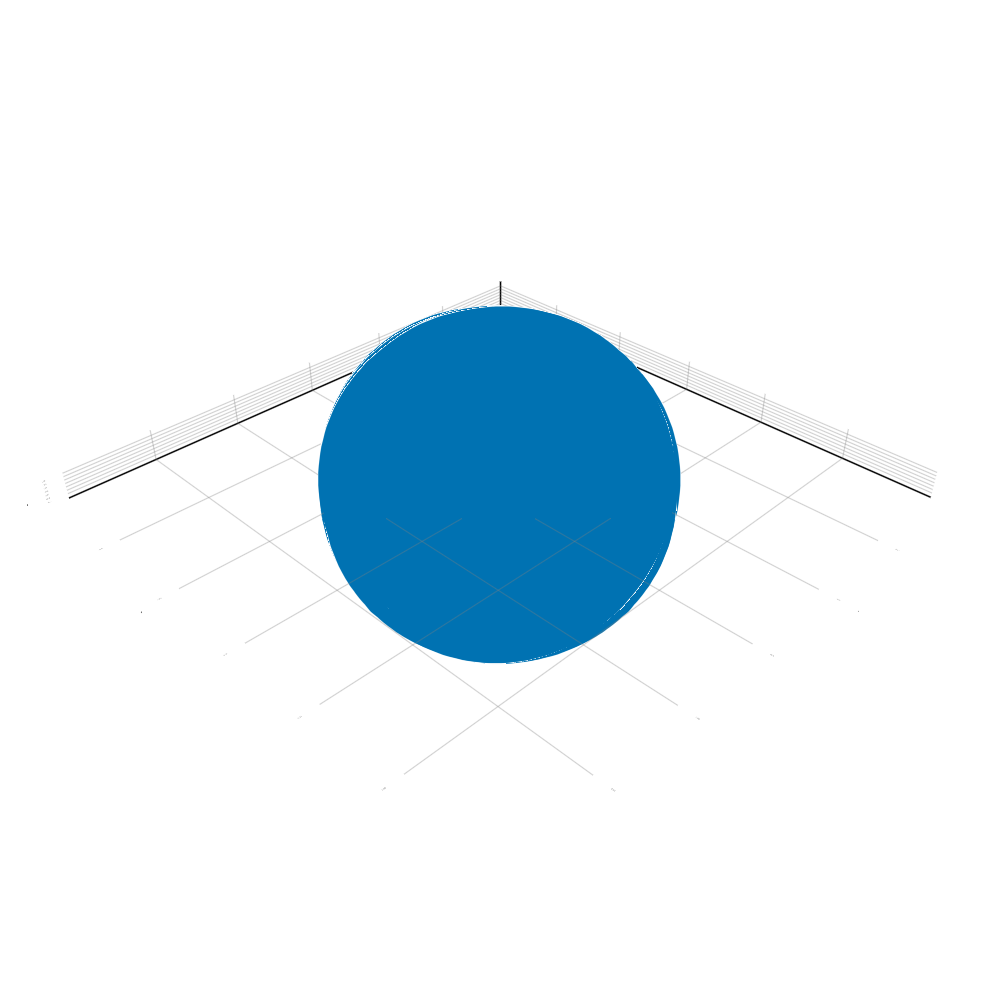

基础使用
在着手模拟之前，建议首先熟悉 AstroNbodySim.jl 的依赖包
整个项目有较为完善的注释，在开发和使用过程中如果不熟悉接口的参数和关键字，可以在 REPL 中使用 help?> 快速获得帮助，比如：
julia> using AstroIO
help?> read_gadget2
search: read_gadget2 read_gadget2_pos read_gadget2_jld
read_gadget2(filename::AbstractString, units, fileunits = uGadget2; kw...)
Return a Tuple of header and particle data in snapshot file.
units is supported by PhysicalParticles: uSI, uCGS, uAstro,
uGadget2, nothing. fileunits is the internal units in the file,
and will be converted to units while reading the file.
Keywords
≡≡≡≡≡≡≡≡≡≡
• acc::Bool = false : read acceleration data if exist
• pot::Bool = false : read potential data if exist带单位的矢量和粒子类型
julia> # PhysicalParticles 定义了矢量和粒子类型 using PhysicalParticlesjulia> # 将默认（换算）单位设置为天体物理单位 astro()julia> # using UnitfulAstro 十分必要，如果在使用天体物理单位的话 using UnitfulAstrojulia> # 定义带单位的矢量 a = PVector(3.0u"kpc", 4.0u"kpc", 12.0u"kpc")PVector(3.0 kpc, 4.0 kpc, 12.0 kpc)julia> b = PVector(1.0, 1.0, 1.0, u"kpc")PVector(1.0 kpc, 1.0 kpc, 1.0 kpc)julia> c = PVector2D()PhysicalParticles.PVector2D{Float64}(0.0, 0.0)julia> d = PVector2D(0.0, 1.0)PhysicalParticles.PVector2D{Float64}(0.0, 1.0)julia> # 基本矢量运算 a * b19.0 kpc^2julia> c + dPhysicalParticles.PVector2D{Float64}(0.0, 1.0)julia> norm(a)13.0 kpcjulia> normalize(a)PVector(0.23076923076923078 kpc, 0.3076923076923077 kpc, 0.9230769230769231 kpc)julia> # 矢量的数组 points = rand(PVector{Float64}, 5) * u"kpc"5-element Vector{PhysicalParticles.PVector{Unitful.Quantity{Float64, 𝐋, Unitful.FreeUnits{(kpc,), 𝐋, nothing}}}}: PVector(0.6778136854367289 kpc, 0.2925362893940522 kpc, 0.7043798058364505 kpc) PVector(0.551596464341226 kpc, 0.7024933668526294 kpc, 0.3509470722375547 kpc) PVector(0.6856942382332912 kpc, 0.2396689041740171 kpc, 0.6792863984804945 kpc) PVector(0.5393285947373677 kpc, 0.9955761328587835 kpc, 0.9951215302165579 kpc) PVector(0.36733191514735275 kpc, 0.7279638516604625 kpc, 0.15650903722808984 kpc)julia> p = randn_pvector2d(5)5-element Vector{PhysicalParticles.PVector2D{Float64}}: PhysicalParticles.PVector2D{Float64}(0.47910842922914415, -0.10337172608908125) PhysicalParticles.PVector2D{Float64}(-1.6344437329482933, 0.11977946979979717) PhysicalParticles.PVector2D{Float64}(-1.829184369127497, -0.09703847976680297) PhysicalParticles.PVector2D{Float64}(1.310375885236379, -0.3152369170205236) PhysicalParticles.PVector2D{Float64}(1.0632775020375407, -0.2967609076856039)julia> mean(p)PhysicalParticles.PVector2D{Float64}(-0.1221732571145453, -0.13852571215244291)julia> PhysicalParticles.center(p)PhysicalParticles.PVector2D{Float64}(-0.259404241945559, -0.09772872361036321)julia> median(p)PhysicalParticles.PVector2D{Float64}(0.47910842922914415, -0.10337172608908125)julia> # 定义粒子 particles = [Star(uAstro, id = i) for i in 1:5]5-element Vector{PhysicalParticles.Star{Unitful.Quantity{Float64, 𝐋, Unitful.FreeUnits{(kpc,), 𝐋, nothing}}, Unitful.Quantity{Float64, 𝐋 𝐓^-1, Unitful.FreeUnits{(kpc, Gyr^-1), 𝐋 𝐓^-1, nothing}}, Unitful.Quantity{Float64, 𝐋 𝐓^-2, Unitful.FreeUnits{(kpc, Gyr^-2), 𝐋 𝐓^-2, nothing}}, Unitful.Quantity{Float64, 𝐌, Unitful.FreeUnits{(M⊙,), 𝐌, nothing}}, Unitful.Quantity{Float64, 𝐋^2 𝐓^-2, Unitful.FreeUnits{(kpc^2, Gyr^-2), 𝐋^2 𝐓^-2, nothing}}, Int64}}: Star 1 STAR: Pos = PVector(0.0 kpc, 0.0 kpc, 0.0 kpc), Vel = PVector(0.0 kpc Gyr^-1, 0.0 kpc Gyr^-1, 0.0 kpc Gyr^-1), Acc = PVector(0.0 kpc Gyr^-2, 0.0 kpc Gyr^-2, 0.0 kpc Gyr^-2), Mass = 0.0 M⊙, Ti_endstep = 0, Ti_begstep = 0, Potential = 0.0 kpc^2 Gyr^-2, OldAcc = 0.0 kpc Gyr^-2 Star 2 STAR: Pos = PVector(0.0 kpc, 0.0 kpc, 0.0 kpc), Vel = PVector(0.0 kpc Gyr^-1, 0.0 kpc Gyr^-1, 0.0 kpc Gyr^-1), Acc = PVector(0.0 kpc Gyr^-2, 0.0 kpc Gyr^-2, 0.0 kpc Gyr^-2), Mass = 0.0 M⊙, Ti_endstep = 0, Ti_begstep = 0, Potential = 0.0 kpc^2 Gyr^-2, OldAcc = 0.0 kpc Gyr^-2 Star 3 STAR: Pos = PVector(0.0 kpc, 0.0 kpc, 0.0 kpc), Vel = PVector(0.0 kpc Gyr^-1, 0.0 kpc Gyr^-1, 0.0 kpc Gyr^-1), Acc = PVector(0.0 kpc Gyr^-2, 0.0 kpc Gyr^-2, 0.0 kpc Gyr^-2), Mass = 0.0 M⊙, Ti_endstep = 0, Ti_begstep = 0, Potential = 0.0 kpc^2 Gyr^-2, OldAcc = 0.0 kpc Gyr^-2 Star 4 STAR: Pos = PVector(0.0 kpc, 0.0 kpc, 0.0 kpc), Vel = PVector(0.0 kpc Gyr^-1, 0.0 kpc Gyr^-1, 0.0 kpc Gyr^-1), Acc = PVector(0.0 kpc Gyr^-2, 0.0 kpc Gyr^-2, 0.0 kpc Gyr^-2), Mass = 0.0 M⊙, Ti_endstep = 0, Ti_begstep = 0, Potential = 0.0 kpc^2 Gyr^-2, OldAcc = 0.0 kpc Gyr^-2 Star 5 STAR: Pos = PVector(0.0 kpc, 0.0 kpc, 0.0 kpc), Vel = PVector(0.0 kpc Gyr^-1, 0.0 kpc Gyr^-1, 0.0 kpc Gyr^-1), Acc = PVector(0.0 kpc Gyr^-2, 0.0 kpc Gyr^-2, 0.0 kpc Gyr^-2), Mass = 0.0 M⊙, Ti_endstep = 0, Ti_begstep = 0, Potential = 0.0 kpc^2 Gyr^-2, OldAcc = 0.0 kpc Gyr^-2julia> # 逐一修改粒子坐标 assign_particles(particles, :Pos, points)julia> # 平均坐标 average(particles, :Pos)PVector(0.5643529795791933 kpc, 0.591647708987989 kpc, 0.5772487687998294 kpc)julia> # 质心坐标 assign_particles(particles, :Mass, rand(5) * u"Msun")julia> averagebymass(particles, :Pos)PVector(0.5847458496240393 kpc, 0.42603243965931165 kpc, 0.5322552809356582 kpc)julia> # StructArray 可以更加高效地修改粒子数据 StructArray(particles)5-element StructArray(::Vector{PhysicalParticles.PVector{Unitful.Quantity{Float64, 𝐋, Unitful.FreeUnits{(kpc,), 𝐋, nothing}}}}, ::Vector{PhysicalParticles.PVector{Unitful.Quantity{Float64, 𝐋 𝐓^-1, Unitful.FreeUnits{(kpc, Gyr^-1), 𝐋 𝐓^-1, nothing}}}}, ::Vector{PhysicalParticles.PVector{Unitful.Quantity{Float64, 𝐋 𝐓^-2, Unitful.FreeUnits{(kpc, Gyr^-2), 𝐋 𝐓^-2, nothing}}}}, ::Vector{Unitful.Quantity{Float64, 𝐌, Unitful.FreeUnits{(M⊙,), 𝐌, nothing}}}, ::Vector{Int64}, ::Vector{PhysicalParticles.Collection}, ::Vector{Int64}, ::Vector{Int64}, ::Vector{Int64}, ::Vector{Unitful.Quantity{Float64, 𝐋^2 𝐓^-2, Unitful.FreeUnits{(kpc^2, Gyr^-2), 𝐋^2 𝐓^-2, nothing}}}, ::Vector{Unitful.Quantity{Float64, 𝐋 𝐓^-2, Unitful.FreeUnits{(kpc, Gyr^-2), 𝐋 𝐓^-2, nothing}}}) with eltype PhysicalParticles.Star{Unitful.Quantity{Float64, 𝐋, Unitful.FreeUnits{(kpc,), 𝐋, nothing}}, Unitful.Quantity{Float64, 𝐋 𝐓^-1, Unitful.FreeUnits{(kpc, Gyr^-1), 𝐋 𝐓^-1, nothing}}, Unitful.Quantity{Float64, 𝐋 𝐓^-2, Unitful.FreeUnits{(kpc, Gyr^-2), 𝐋 𝐓^-2, nothing}}, Unitful.Quantity{Float64, 𝐌, Unitful.FreeUnits{(M⊙,), 𝐌, nothing}}, Unitful.Quantity{Float64, 𝐋^2 𝐓^-2, Unitful.FreeUnits{(kpc^2, Gyr^-2), 𝐋^2 𝐓^-2, nothing}}, Int64}: Star 1 STAR: Pos = PVector(0.6778136854367289 kpc, 0.2925362893940522 kpc, 0.7043798058364505 kpc), Vel = PVector(0.0 kpc Gyr^-1, 0.0 kpc Gyr^-1, 0.0 kpc Gyr^-1), Acc = PVector(0.0 kpc Gyr^-2, 0.0 kpc Gyr^-2, 0.0 kpc Gyr^-2), Mass = 0.7276980361538673 M⊙, Ti_endstep = 0, Ti_begstep = 0, Potential = 0.0 kpc^2 Gyr^-2, OldAcc = 0.0 kpc Gyr^-2 Star 2 STAR: Pos = PVector(0.551596464341226 kpc, 0.7024933668526294 kpc, 0.3509470722375547 kpc), Vel = PVector(0.0 kpc Gyr^-1, 0.0 kpc Gyr^-1, 0.0 kpc Gyr^-1), Acc = PVector(0.0 kpc Gyr^-2, 0.0 kpc Gyr^-2, 0.0 kpc Gyr^-2), Mass = 0.07679032924231599 M⊙, Ti_endstep = 0, Ti_begstep = 0, Potential = 0.0 kpc^2 Gyr^-2, OldAcc = 0.0 kpc Gyr^-2 Star 3 STAR: Pos = PVector(0.6856942382332912 kpc, 0.2396689041740171 kpc, 0.6792863984804945 kpc), Vel = PVector(0.0 kpc Gyr^-1, 0.0 kpc Gyr^-1, 0.0 kpc Gyr^-1), Acc = PVector(0.0 kpc Gyr^-2, 0.0 kpc Gyr^-2, 0.0 kpc Gyr^-2), Mass = 0.7720545734443486 M⊙, Ti_endstep = 0, Ti_begstep = 0, Potential = 0.0 kpc^2 Gyr^-2, OldAcc = 0.0 kpc Gyr^-2 Star 4 STAR: Pos = PVector(0.5393285947373677 kpc, 0.9955761328587835 kpc, 0.9951215302165579 kpc), Vel = PVector(0.0 kpc Gyr^-1, 0.0 kpc Gyr^-1, 0.0 kpc Gyr^-1), Acc = PVector(0.0 kpc Gyr^-2, 0.0 kpc Gyr^-2, 0.0 kpc Gyr^-2), Mass = 0.041552908781629316 M⊙, Ti_endstep = 0, Ti_begstep = 0, Potential = 0.0 kpc^2 Gyr^-2, OldAcc = 0.0 kpc Gyr^-2 Star 5 STAR: Pos = PVector(0.36733191514735275 kpc, 0.7279638516604625 kpc, 0.15650903722808984 kpc), Vel = PVector(0.0 kpc Gyr^-1, 0.0 kpc Gyr^-1, 0.0 kpc Gyr^-1), Acc = PVector(0.0 kpc Gyr^-2, 0.0 kpc Gyr^-2, 0.0 kpc Gyr^-2), Mass = 0.6495911843832342 M⊙, Ti_endstep = 0, Ti_begstep = 0, Potential = 0.0 kpc^2 Gyr^-2, OldAcc = 0.0 kpc Gyr^-2julia> # 可以直接创建 StructArray s = StructArray(Star(uAstro, id = i) for i in 1:5)5-element StructArray(::Vector{PhysicalParticles.PVector{Unitful.Quantity{Float64, 𝐋, Unitful.FreeUnits{(kpc,), 𝐋, nothing}}}}, ::Vector{PhysicalParticles.PVector{Unitful.Quantity{Float64, 𝐋 𝐓^-1, Unitful.FreeUnits{(kpc, Gyr^-1), 𝐋 𝐓^-1, nothing}}}}, ::Vector{PhysicalParticles.PVector{Unitful.Quantity{Float64, 𝐋 𝐓^-2, Unitful.FreeUnits{(kpc, Gyr^-2), 𝐋 𝐓^-2, nothing}}}}, ::Vector{Unitful.Quantity{Float64, 𝐌, Unitful.FreeUnits{(M⊙,), 𝐌, nothing}}}, ::Vector{Int64}, ::Vector{PhysicalParticles.Collection}, ::Vector{Int64}, ::Vector{Int64}, ::Vector{Int64}, ::Vector{Unitful.Quantity{Float64, 𝐋^2 𝐓^-2, Unitful.FreeUnits{(kpc^2, Gyr^-2), 𝐋^2 𝐓^-2, nothing}}}, ::Vector{Unitful.Quantity{Float64, 𝐋 𝐓^-2, Unitful.FreeUnits{(kpc, Gyr^-2), 𝐋 𝐓^-2, nothing}}}) with eltype PhysicalParticles.Star{Unitful.Quantity{Float64, 𝐋, Unitful.FreeUnits{(kpc,), 𝐋, nothing}}, Unitful.Quantity{Float64, 𝐋 𝐓^-1, Unitful.FreeUnits{(kpc, Gyr^-1), 𝐋 𝐓^-1, nothing}}, Unitful.Quantity{Float64, 𝐋 𝐓^-2, Unitful.FreeUnits{(kpc, Gyr^-2), 𝐋 𝐓^-2, nothing}}, Unitful.Quantity{Float64, 𝐌, Unitful.FreeUnits{(M⊙,), 𝐌, nothing}}, Unitful.Quantity{Float64, 𝐋^2 𝐓^-2, Unitful.FreeUnits{(kpc^2, Gyr^-2), 𝐋^2 𝐓^-2, nothing}}, Int64}: Star 1 STAR: Pos = PVector(0.0 kpc, 0.0 kpc, 0.0 kpc), Vel = PVector(0.0 kpc Gyr^-1, 0.0 kpc Gyr^-1, 0.0 kpc Gyr^-1), Acc = PVector(0.0 kpc Gyr^-2, 0.0 kpc Gyr^-2, 0.0 kpc Gyr^-2), Mass = 0.0 M⊙, Ti_endstep = 0, Ti_begstep = 0, Potential = 0.0 kpc^2 Gyr^-2, OldAcc = 0.0 kpc Gyr^-2 Star 2 STAR: Pos = PVector(0.0 kpc, 0.0 kpc, 0.0 kpc), Vel = PVector(0.0 kpc Gyr^-1, 0.0 kpc Gyr^-1, 0.0 kpc Gyr^-1), Acc = PVector(0.0 kpc Gyr^-2, 0.0 kpc Gyr^-2, 0.0 kpc Gyr^-2), Mass = 0.0 M⊙, Ti_endstep = 0, Ti_begstep = 0, Potential = 0.0 kpc^2 Gyr^-2, OldAcc = 0.0 kpc Gyr^-2 Star 3 STAR: Pos = PVector(0.0 kpc, 0.0 kpc, 0.0 kpc), Vel = PVector(0.0 kpc Gyr^-1, 0.0 kpc Gyr^-1, 0.0 kpc Gyr^-1), Acc = PVector(0.0 kpc Gyr^-2, 0.0 kpc Gyr^-2, 0.0 kpc Gyr^-2), Mass = 0.0 M⊙, Ti_endstep = 0, Ti_begstep = 0, Potential = 0.0 kpc^2 Gyr^-2, OldAcc = 0.0 kpc Gyr^-2 Star 4 STAR: Pos = PVector(0.0 kpc, 0.0 kpc, 0.0 kpc), Vel = PVector(0.0 kpc Gyr^-1, 0.0 kpc Gyr^-1, 0.0 kpc Gyr^-1), Acc = PVector(0.0 kpc Gyr^-2, 0.0 kpc Gyr^-2, 0.0 kpc Gyr^-2), Mass = 0.0 M⊙, Ti_endstep = 0, Ti_begstep = 0, Potential = 0.0 kpc^2 Gyr^-2, OldAcc = 0.0 kpc Gyr^-2 Star 5 STAR: Pos = PVector(0.0 kpc, 0.0 kpc, 0.0 kpc), Vel = PVector(0.0 kpc Gyr^-1, 0.0 kpc Gyr^-1, 0.0 kpc Gyr^-1), Acc = PVector(0.0 kpc Gyr^-2, 0.0 kpc Gyr^-2, 0.0 kpc Gyr^-2), Mass = 0.0 M⊙, Ti_endstep = 0, Ti_begstep = 0, Potential = 0.0 kpc^2 Gyr^-2, OldAcc = 0.0 kpc Gyr^-2julia> # StructArray 同样支持其他函数，比如 assign_particles, averagebymass 等 # It is much more convenient to use dot operations s.Pos .= points5-element Vector{PhysicalParticles.PVector{Unitful.Quantity{Float64, 𝐋, Unitful.FreeUnits{(kpc,), 𝐋, nothing}}}}: PVector(0.6778136854367289 kpc, 0.2925362893940522 kpc, 0.7043798058364505 kpc) PVector(0.551596464341226 kpc, 0.7024933668526294 kpc, 0.3509470722375547 kpc) PVector(0.6856942382332912 kpc, 0.2396689041740171 kpc, 0.6792863984804945 kpc) PVector(0.5393285947373677 kpc, 0.9955761328587835 kpc, 0.9951215302165579 kpc) PVector(0.36733191514735275 kpc, 0.7279638516604625 kpc, 0.15650903722808984 kpc)julia> s.Mass .= rand(5) * u"Msun"5-element Vector{Unitful.Quantity{Float64, 𝐌, Unitful.FreeUnits{(M⊙,), 𝐌, nothing}}}: 0.7280936195462613 M⊙ 0.7039450720266237 M⊙ 0.7261414034899025 M⊙ 0.7840766501620785 M⊙ 0.08327347971627885 M⊙julia> s5-element StructArray(::Vector{PhysicalParticles.PVector{Unitful.Quantity{Float64, 𝐋, Unitful.FreeUnits{(kpc,), 𝐋, nothing}}}}, ::Vector{PhysicalParticles.PVector{Unitful.Quantity{Float64, 𝐋 𝐓^-1, Unitful.FreeUnits{(kpc, Gyr^-1), 𝐋 𝐓^-1, nothing}}}}, ::Vector{PhysicalParticles.PVector{Unitful.Quantity{Float64, 𝐋 𝐓^-2, Unitful.FreeUnits{(kpc, Gyr^-2), 𝐋 𝐓^-2, nothing}}}}, ::Vector{Unitful.Quantity{Float64, 𝐌, Unitful.FreeUnits{(M⊙,), 𝐌, nothing}}}, ::Vector{Int64}, ::Vector{PhysicalParticles.Collection}, ::Vector{Int64}, ::Vector{Int64}, ::Vector{Int64}, ::Vector{Unitful.Quantity{Float64, 𝐋^2 𝐓^-2, Unitful.FreeUnits{(kpc^2, Gyr^-2), 𝐋^2 𝐓^-2, nothing}}}, ::Vector{Unitful.Quantity{Float64, 𝐋 𝐓^-2, Unitful.FreeUnits{(kpc, Gyr^-2), 𝐋 𝐓^-2, nothing}}}) with eltype PhysicalParticles.Star{Unitful.Quantity{Float64, 𝐋, Unitful.FreeUnits{(kpc,), 𝐋, nothing}}, Unitful.Quantity{Float64, 𝐋 𝐓^-1, Unitful.FreeUnits{(kpc, Gyr^-1), 𝐋 𝐓^-1, nothing}}, Unitful.Quantity{Float64, 𝐋 𝐓^-2, Unitful.FreeUnits{(kpc, Gyr^-2), 𝐋 𝐓^-2, nothing}}, Unitful.Quantity{Float64, 𝐌, Unitful.FreeUnits{(M⊙,), 𝐌, nothing}}, Unitful.Quantity{Float64, 𝐋^2 𝐓^-2, Unitful.FreeUnits{(kpc^2, Gyr^-2), 𝐋^2 𝐓^-2, nothing}}, Int64}: Star 1 STAR: Pos = PVector(0.6778136854367289 kpc, 0.2925362893940522 kpc, 0.7043798058364505 kpc), Vel = PVector(0.0 kpc Gyr^-1, 0.0 kpc Gyr^-1, 0.0 kpc Gyr^-1), Acc = PVector(0.0 kpc Gyr^-2, 0.0 kpc Gyr^-2, 0.0 kpc Gyr^-2), Mass = 0.7280936195462613 M⊙, Ti_endstep = 0, Ti_begstep = 0, Potential = 0.0 kpc^2 Gyr^-2, OldAcc = 0.0 kpc Gyr^-2 Star 2 STAR: Pos = PVector(0.551596464341226 kpc, 0.7024933668526294 kpc, 0.3509470722375547 kpc), Vel = PVector(0.0 kpc Gyr^-1, 0.0 kpc Gyr^-1, 0.0 kpc Gyr^-1), Acc = PVector(0.0 kpc Gyr^-2, 0.0 kpc Gyr^-2, 0.0 kpc Gyr^-2), Mass = 0.7039450720266237 M⊙, Ti_endstep = 0, Ti_begstep = 0, Potential = 0.0 kpc^2 Gyr^-2, OldAcc = 0.0 kpc Gyr^-2 Star 3 STAR: Pos = PVector(0.6856942382332912 kpc, 0.2396689041740171 kpc, 0.6792863984804945 kpc), Vel = PVector(0.0 kpc Gyr^-1, 0.0 kpc Gyr^-1, 0.0 kpc Gyr^-1), Acc = PVector(0.0 kpc Gyr^-2, 0.0 kpc Gyr^-2, 0.0 kpc Gyr^-2), Mass = 0.7261414034899025 M⊙, Ti_endstep = 0, Ti_begstep = 0, Potential = 0.0 kpc^2 Gyr^-2, OldAcc = 0.0 kpc Gyr^-2 Star 4 STAR: Pos = PVector(0.5393285947373677 kpc, 0.9955761328587835 kpc, 0.9951215302165579 kpc), Vel = PVector(0.0 kpc Gyr^-1, 0.0 kpc Gyr^-1, 0.0 kpc Gyr^-1), Acc = PVector(0.0 kpc Gyr^-2, 0.0 kpc Gyr^-2, 0.0 kpc Gyr^-2), Mass = 0.7840766501620785 M⊙, Ti_endstep = 0, Ti_begstep = 0, Potential = 0.0 kpc^2 Gyr^-2, OldAcc = 0.0 kpc Gyr^-2 Star 5 STAR: Pos = PVector(0.36733191514735275 kpc, 0.7279638516604625 kpc, 0.15650903722808984 kpc), Vel = PVector(0.0 kpc Gyr^-1, 0.0 kpc Gyr^-1, 0.0 kpc Gyr^-1), Acc = PVector(0.0 kpc Gyr^-2, 0.0 kpc Gyr^-2, 0.0 kpc Gyr^-2), Mass = 0.08327347971627885 M⊙, Ti_endstep = 0, Ti_begstep = 0, Potential = 0.0 kpc^2 Gyr^-2, OldAcc = 0.0 kpc Gyr^-2
生成初始条件
julia> using AstroICjulia> config = PlummerStarCluster()Config of Plummer Star Cluster Initial Conditions: Gravity Model: AstroSimBase.Newton Particle Collection: STAR Number of Samples: 1000 Virial Radius: 0.01 kpc Total Mass: 100000.0 M⊙julia> particles = generate(config)1000-element StructArray(::Vector{PhysicalParticles.PVector{Unitful.Quantity{Float64, 𝐋, Unitful.FreeUnits{(kpc,), 𝐋, nothing}}}}, ::Vector{PhysicalParticles.PVector{Unitful.Quantity{Float64, 𝐋 𝐓^-1, Unitful.FreeUnits{(kpc, Gyr^-1), 𝐋 𝐓^-1, nothing}}}}, ::Vector{PhysicalParticles.PVector{Unitful.Quantity{Float64, 𝐋 𝐓^-2, Unitful.FreeUnits{(kpc, Gyr^-2), 𝐋 𝐓^-2, nothing}}}}, ::Vector{Unitful.Quantity{Float64, 𝐌, Unitful.FreeUnits{(M⊙,), 𝐌, nothing}}}, ::Vector{Int64}, ::Vector{PhysicalParticles.Collection}, ::Vector{Int64}, ::Vector{Int64}, ::Vector{Int64}, ::Vector{Unitful.Quantity{Float64, 𝐋^2 𝐓^-2, Unitful.FreeUnits{(kpc^2, Gyr^-2), 𝐋^2 𝐓^-2, nothing}}}, ::Vector{Unitful.Quantity{Float64, 𝐋 𝐓^-2, Unitful.FreeUnits{(kpc, Gyr^-2), 𝐋 𝐓^-2, nothing}}}) with eltype PhysicalParticles.Star{Unitful.Quantity{Float64, 𝐋, Unitful.FreeUnits{(kpc,), 𝐋, nothing}}, Unitful.Quantity{Float64, 𝐋 𝐓^-1, Unitful.FreeUnits{(kpc, Gyr^-1), 𝐋 𝐓^-1, nothing}}, Unitful.Quantity{Float64, 𝐋 𝐓^-2, Unitful.FreeUnits{(kpc, Gyr^-2), 𝐋 𝐓^-2, nothing}}, Unitful.Quantity{Float64, 𝐌, Unitful.FreeUnits{(M⊙,), 𝐌, nothing}}, Unitful.Quantity{Float64, 𝐋^2 𝐓^-2, Unitful.FreeUnits{(kpc^2, Gyr^-2), 𝐋^2 𝐓^-2, nothing}}, Int64}: Star 1 STAR: Pos = PVector(-0.030319285559784723 kpc, 0.011857408438945205 kpc, -0.020978597935682644 kpc), Vel = PVector(1.8733328322612843 kpc Gyr^-1, 0.6751665232270048 kpc Gyr^-1, -0.3208352242128546 kpc Gyr^-1), Acc = PVector(0.0 kpc Gyr^-2, 0.0 kpc Gyr^-2, 0.0 kpc Gyr^-2), Mass = 100.0 M⊙, Ti_endstep = 0, Ti_begstep = 0, Potential = 0.0 kpc^2 Gyr^-2, OldAcc = 0.0 kpc Gyr^-2 Star 2 STAR: Pos = PVector(0.006725610384976274 kpc, -2.5073814266507064e-5 kpc, -0.003935416560823025 kpc), Vel = PVector(1.2433215326742189 kpc Gyr^-1, -1.5093356608556179 kpc Gyr^-1, -0.2412625802501055 kpc Gyr^-1), Acc = PVector(0.0 kpc Gyr^-2, 0.0 kpc Gyr^-2, 0.0 kpc Gyr^-2), Mass = 100.0 M⊙, Ti_endstep = 0, Ti_begstep = 0, Potential = 0.0 kpc^2 Gyr^-2, OldAcc = 0.0 kpc Gyr^-2 Star 3 STAR: Pos = PVector(0.007424139872317542 kpc, -0.0004910339867621169 kpc, -0.0005447739415035117 kpc), Vel = PVector(1.1266981632232826 kpc Gyr^-1, -3.794116416030277 kpc Gyr^-1, -1.1530635288569924 kpc Gyr^-1), Acc = PVector(0.0 kpc Gyr^-2, 0.0 kpc Gyr^-2, 0.0 kpc Gyr^-2), Mass = 100.0 M⊙, Ti_endstep = 0, Ti_begstep = 0, Potential = 0.0 kpc^2 Gyr^-2, OldAcc = 0.0 kpc Gyr^-2 Star 4 STAR: Pos = PVector(-0.010877818835835518 kpc, 0.0018835980818845562 kpc, -0.007328296801551867 kpc), Vel = PVector(-1.7315071552592982 kpc Gyr^-1, 1.2869436356149595 kpc Gyr^-1, -0.4697872462137893 kpc Gyr^-1), Acc = PVector(0.0 kpc Gyr^-2, 0.0 kpc Gyr^-2, 0.0 kpc Gyr^-2), Mass = 100.0 M⊙, Ti_endstep = 0, Ti_begstep = 0, Potential = 0.0 kpc^2 Gyr^-2, OldAcc = 0.0 kpc Gyr^-2 Star 5 STAR: Pos = PVector(0.003752840116170486 kpc, 0.005529093217789888 kpc, -0.0027184247915384464 kpc), Vel = PVector(-2.5807159733251765 kpc Gyr^-1, 2.7868249253753423 kpc Gyr^-1, 1.296436449368328 kpc Gyr^-1), Acc = PVector(0.0 kpc Gyr^-2, 0.0 kpc Gyr^-2, 0.0 kpc Gyr^-2), Mass = 100.0 M⊙, Ti_endstep = 0, Ti_begstep = 0, Potential = 0.0 kpc^2 Gyr^-2, OldAcc = 0.0 kpc Gyr^-2 Star 6 STAR: Pos = PVector(0.0033686753908361354 kpc, -0.005298702520232387 kpc, 0.0002556872009076361 kpc), Vel = PVector(-0.474541298868339 kpc Gyr^-1, -5.0537137144616695 kpc Gyr^-1, -0.3840714791549769 kpc Gyr^-1), Acc = PVector(0.0 kpc Gyr^-2, 0.0 kpc Gyr^-2, 0.0 kpc Gyr^-2), Mass = 100.0 M⊙, Ti_endstep = 0, Ti_begstep = 0, Potential = 0.0 kpc^2 Gyr^-2, OldAcc = 0.0 kpc Gyr^-2 Star 7 STAR: Pos = PVector(-0.0009586796277001637 kpc, -0.0039279973889766095 kpc, -0.0009345994243557411 kpc), Vel = PVector(2.327190723786019 kpc Gyr^-1, 0.3358894641644973 kpc Gyr^-1, -0.7691803297155813 kpc Gyr^-1), Acc = PVector(0.0 kpc Gyr^-2, 0.0 kpc Gyr^-2, 0.0 kpc Gyr^-2), Mass = 100.0 M⊙, Ti_endstep = 0, Ti_begstep = 0, Potential = 0.0 kpc^2 Gyr^-2, OldAcc = 0.0 kpc Gyr^-2 Star 8 STAR: Pos = PVector(-0.0012591445452260134 kpc, 0.022807112348951747 kpc, -8.136122516774926e-5 kpc), Vel = PVector(1.5686564417726845 kpc Gyr^-1, 0.07606897003131353 kpc Gyr^-1, -0.09811234123636182 kpc Gyr^-1), Acc = PVector(0.0 kpc Gyr^-2, 0.0 kpc Gyr^-2, 0.0 kpc Gyr^-2), Mass = 100.0 M⊙, Ti_endstep = 0, Ti_begstep = 0, Potential = 0.0 kpc^2 Gyr^-2, OldAcc = 0.0 kpc Gyr^-2 Star 9 STAR: Pos = PVector(-0.00721502027738431 kpc, -0.0071717617433736435 kpc, 0.0037343237728790697 kpc), Vel = PVector(4.921639242590307 kpc Gyr^-1, 2.0962013335568073 kpc Gyr^-1, 0.5886938415325247 kpc Gyr^-1), Acc = PVector(0.0 kpc Gyr^-2, 0.0 kpc Gyr^-2, 0.0 kpc Gyr^-2), Mass = 100.0 M⊙, Ti_endstep = 0, Ti_begstep = 0, Potential = 0.0 kpc^2 Gyr^-2, OldAcc = 0.0 kpc Gyr^-2 Star 10 STAR: Pos = PVector(-0.00377523307257357 kpc, 0.017607891927543303 kpc, -0.018307991378888097 kpc), Vel = PVector(-0.16560733202425398 kpc Gyr^-1, 0.8765978247124031 kpc Gyr^-1, -0.8370894350428015 kpc Gyr^-1), Acc = PVector(0.0 kpc Gyr^-2, 0.0 kpc Gyr^-2, 0.0 kpc Gyr^-2), Mass = 100.0 M⊙, Ti_endstep = 0, Ti_begstep = 0, Potential = 0.0 kpc^2 Gyr^-2, OldAcc = 0.0 kpc Gyr^-2 ⋮ Star 992 STAR: Pos = PVector(-0.019000038433384384 kpc, -0.0009453415841684919 kpc, 0.0038575068391126623 kpc), Vel = PVector(2.0788935669321673 kpc Gyr^-1, -0.6532739502740342 kpc Gyr^-1, -2.1118259934144494 kpc Gyr^-1), Acc = PVector(0.0 kpc Gyr^-2, 0.0 kpc Gyr^-2, 0.0 kpc Gyr^-2), Mass = 100.0 M⊙, Ti_endstep = 0, Ti_begstep = 0, Potential = 0.0 kpc^2 Gyr^-2, OldAcc = 0.0 kpc Gyr^-2 Star 993 STAR: Pos = PVector(0.004816743854079079 kpc, -0.002846835922956887 kpc, 0.0012587477051538539 kpc), Vel = PVector(-0.940446008361486 kpc Gyr^-1, -0.9748345190583863 kpc Gyr^-1, 2.0847939048696933 kpc Gyr^-1), Acc = PVector(0.0 kpc Gyr^-2, 0.0 kpc Gyr^-2, 0.0 kpc Gyr^-2), Mass = 100.0 M⊙, Ti_endstep = 0, Ti_begstep = 0, Potential = 0.0 kpc^2 Gyr^-2, OldAcc = 0.0 kpc Gyr^-2 Star 994 STAR: Pos = PVector(-0.005140182461325433 kpc, 0.0009371165353388362 kpc, 0.0053103501471712285 kpc), Vel = PVector(0.3060652357575687 kpc Gyr^-1, 2.1574962307129573 kpc Gyr^-1, 0.6149749407288839 kpc Gyr^-1), Acc = PVector(0.0 kpc Gyr^-2, 0.0 kpc Gyr^-2, 0.0 kpc Gyr^-2), Mass = 100.0 M⊙, Ti_endstep = 0, Ti_begstep = 0, Potential = 0.0 kpc^2 Gyr^-2, OldAcc = 0.0 kpc Gyr^-2 Star 995 STAR: Pos = PVector(-0.0005319294448035345 kpc, -0.014985973987462363 kpc, -0.012478553414594107 kpc), Vel = PVector(-0.3205226369614877 kpc Gyr^-1, 2.1053444447195115 kpc Gyr^-1, 3.7110730899212694 kpc Gyr^-1), Acc = PVector(0.0 kpc Gyr^-2, 0.0 kpc Gyr^-2, 0.0 kpc Gyr^-2), Mass = 100.0 M⊙, Ti_endstep = 0, Ti_begstep = 0, Potential = 0.0 kpc^2 Gyr^-2, OldAcc = 0.0 kpc Gyr^-2 Star 996 STAR: Pos = PVector(0.010872089218957026 kpc, 0.01117006701910891 kpc, 0.01095908899100496 kpc), Vel = PVector(0.361844016526812 kpc Gyr^-1, -0.40846844567411156 kpc Gyr^-1, -0.09033039191419404 kpc Gyr^-1), Acc = PVector(0.0 kpc Gyr^-2, 0.0 kpc Gyr^-2, 0.0 kpc Gyr^-2), Mass = 100.0 M⊙, Ti_endstep = 0, Ti_begstep = 0, Potential = 0.0 kpc^2 Gyr^-2, OldAcc = 0.0 kpc Gyr^-2 Star 997 STAR: Pos = PVector(-0.003847049213689265 kpc, 0.009301312402895218 kpc, 0.006556457634638276 kpc), Vel = PVector(0.4700318510443459 kpc Gyr^-1, -5.063775715692255 kpc Gyr^-1, -1.517321365365118 kpc Gyr^-1), Acc = PVector(0.0 kpc Gyr^-2, 0.0 kpc Gyr^-2, 0.0 kpc Gyr^-2), Mass = 100.0 M⊙, Ti_endstep = 0, Ti_begstep = 0, Potential = 0.0 kpc^2 Gyr^-2, OldAcc = 0.0 kpc Gyr^-2 Star 998 STAR: Pos = PVector(-0.002037703535909206 kpc, -0.0008781339496372059 kpc, -0.02682237886803042 kpc), Vel = PVector(0.5867010406859358 kpc Gyr^-1, -0.39815136702785386 kpc Gyr^-1, -0.5396556067541908 kpc Gyr^-1), Acc = PVector(0.0 kpc Gyr^-2, 0.0 kpc Gyr^-2, 0.0 kpc Gyr^-2), Mass = 100.0 M⊙, Ti_endstep = 0, Ti_begstep = 0, Potential = 0.0 kpc^2 Gyr^-2, OldAcc = 0.0 kpc Gyr^-2 Star 999 STAR: Pos = PVector(0.0023404177831042364 kpc, -0.0026331229486028732 kpc, 0.0008066432064924988 kpc), Vel = PVector(0.7743790003506954 kpc Gyr^-1, 4.354683735474199 kpc Gyr^-1, 1.1256944081835294 kpc Gyr^-1), Acc = PVector(0.0 kpc Gyr^-2, 0.0 kpc Gyr^-2, 0.0 kpc Gyr^-2), Mass = 100.0 M⊙, Ti_endstep = 0, Ti_begstep = 0, Potential = 0.0 kpc^2 Gyr^-2, OldAcc = 0.0 kpc Gyr^-2 Star 1000 STAR: Pos = PVector(-0.0015800775149720603 kpc, -0.0062048845412687615 kpc, -0.018309063925308604 kpc), Vel = PVector(0.786381461318032 kpc Gyr^-1, 0.5380896230525515 kpc Gyr^-1, 0.3091462843129146 kpc Gyr^-1), Acc = PVector(0.0 kpc Gyr^-2, 0.0 kpc Gyr^-2, 0.0 kpc Gyr^-2), Mass = 100.0 M⊙, Ti_endstep = 0, Ti_begstep = 0, Potential = 0.0 kpc^2 Gyr^-2, OldAcc = 0.0 kpc Gyr^-2
可视化
using AstroPlot
plot_makie(particles)
Snapshot 文件读写
julia> using AstroIOjulia> if !isdir("output/") mkpath("output/") end"output/"julia> write_csv("output/basic.csv", particles)truejulia> write_jld("output/basic.jld2", particles)truejulia> write_gadget2("output/basic.gadget2", particles) # This would generate a header automaticallytruejulia> # 可以从粒子数据生成 Gadget2 header header = HeaderGadget2(particles)Gadget2 Header: Particle Info : | Type | Amount, Mass |-----------|------------------------- | Gas | 0, 0.0 M⊙ | Halo | 0, 0.0 M⊙ | Disk | 0, 0.0 M⊙ | Bulge | 0, 0.0 M⊙ | Star | 1000, 0.0 M⊙ | BlackHole | 0, 0.0 M⊙ (If zero, mass would be read from file) Start time: 0.0 Redshift: 0.0julia> header.time = 0.1 # Gyr0.1julia> write_gadget2("output/basicwithheader.gadget2", header, particles, uGadget2) # write in Gadget2 units (default)truejulia> # 读取刚刚写入的文件 h, d = read_gadget2("output/basic.gadget2", uAstro)(Gadget2 Header: Particle Info : | Type | Amount, Mass |-----------|------------------------- | Gas | 0, 0.0 M⊙ | Halo | 0, 0.0 M⊙ | Disk | 0, 0.0 M⊙ | Bulge | 0, 0.0 M⊙ | Star | 1000, 0.0 M⊙ | BlackHole | 0, 0.0 M⊙ (If zero, mass would be read from file) Start time: 0.0 Redshift: 0.0 , AstroIO.Gadget2Particle{Unitful.Quantity{Float32, 𝐋, Unitful.FreeUnits{(kpc,), 𝐋, nothing}}, Unitful.Quantity{Float32, 𝐋 𝐓^-1, Unitful.FreeUnits{(kpc, Gyr^-1), 𝐋 𝐓^-1, nothing}}, Unitful.Quantity{Float32, 𝐋 𝐓^-2, Unitful.FreeUnits{(kpc, Gyr^-2), 𝐋 𝐓^-2, nothing}}, Unitful.Quantity{Float32, 𝐌, Unitful.FreeUnits{(M⊙,), 𝐌, nothing}}, Unitful.Quantity{Float32, 𝐋^2 𝐓^-2, Unitful.FreeUnits{(kpc^2, Gyr^-2), 𝐋^2 𝐓^-2, nothing}}, Float32, Unitful.Quantity{Float32, 𝐋^2 𝐌 𝚯^-1 𝐓^-2, Unitful.FreeUnits{(K^-1, kpc^2, M⊙, Gyr^-2), 𝐋^2 𝐌 𝚯^-1 𝐓^-2, nothing}}, Unitful.Quantity{Float32, 𝐌 𝐋^-3, Unitful.FreeUnits{(kpc^-3, M⊙), 𝐌 𝐋^-3, nothing}}, Unitful.Quantity{Float32, 𝚯, Unitful.FreeUnits{(K,), 𝚯, nothing}}, Unitful.Quantity{Float32, 𝐋, Unitful.FreeUnits{(kpc,), 𝐋, nothing}}, Unitful.Quantity{Float32, 𝐋^2 𝐌 𝚯^-1 𝐓^-3, Unitful.FreeUnits{(K^-1, kpc^2, M⊙, Gyr^-3), 𝐋^2 𝐌 𝚯^-1 𝐓^-3, nothing}}, Unitful.Quantity{Float32, 𝐌 𝐋^-1 𝐓^-2, Unitful.FreeUnits{(kpc^-1, M⊙, Gyr^-2), 𝐌 𝐋^-1 𝐓^-2, nothing}}, Unitful.Quantity{Float32, 𝐓^-1, Unitful.FreeUnits{(Gyr^-1,), 𝐓^-1, nothing}}, Int32}[AstroIO.Gadget2Particle{Unitful.Quantity{Float32, 𝐋, Unitful.FreeUnits{(kpc,), 𝐋, nothing}}, Unitful.Quantity{Float32, 𝐋 𝐓^-1, Unitful.FreeUnits{(kpc, Gyr^-1), 𝐋 𝐓^-1, nothing}}, Unitful.Quantity{Float32, 𝐋 𝐓^-2, Unitful.FreeUnits{(kpc, Gyr^-2), 𝐋 𝐓^-2, nothing}}, Unitful.Quantity{Float32, 𝐌, Unitful.FreeUnits{(M⊙,), 𝐌, nothing}}, Unitful.Quantity{Float32, 𝐋^2 𝐓^-2, Unitful.FreeUnits{(kpc^2, Gyr^-2), 𝐋^2 𝐓^-2, nothing}}, Float32, Unitful.Quantity{Float32, 𝐋^2 𝐌 𝚯^-1 𝐓^-2, Unitful.FreeUnits{(K^-1, kpc^2, M⊙, Gyr^-2), 𝐋^2 𝐌 𝚯^-1 𝐓^-2, nothing}}, Unitful.Quantity{Float32, 𝐌 𝐋^-3, Unitful.FreeUnits{(kpc^-3, M⊙), 𝐌 𝐋^-3, nothing}}, Unitful.Quantity{Float32, 𝚯, Unitful.FreeUnits{(K,), 𝚯, nothing}}, Unitful.Quantity{Float32, 𝐋, Unitful.FreeUnits{(kpc,), 𝐋, nothing}}, Unitful.Quantity{Float32, 𝐋^2 𝐌 𝚯^-1 𝐓^-3, Unitful.FreeUnits{(K^-1, kpc^2, M⊙, Gyr^-3), 𝐋^2 𝐌 𝚯^-1 𝐓^-3, nothing}}, Unitful.Quantity{Float32, 𝐌 𝐋^-1 𝐓^-2, Unitful.FreeUnits{(kpc^-1, M⊙, Gyr^-2), 𝐌 𝐋^-1 𝐓^-2, nothing}}, Unitful.Quantity{Float32, 𝐓^-1, Unitful.FreeUnits{(Gyr^-1,), 𝐓^-1, nothing}}, Int32}(PVector(-0.030319285f0 kpc, 0.011857408f0 kpc, -0.020978598f0 kpc), PVector(1.8733327f0 kpc Gyr^-1, 0.6751665f0 kpc Gyr^-1, -0.3208352f0 kpc Gyr^-1), PVector(0.0f0 kpc Gyr^-2, 0.0f0 kpc Gyr^-2, 0.0f0 kpc Gyr^-2), 100.0f0 M⊙, 1, PhysicalParticles.STAR, 0, 0, 0, 0.0f0 kpc^2 Gyr^-2, 0.0f0 kpc Gyr^-2, 0.0f0 kpc^2 M⊙ K^-1 Gyr^-2, 0.0f0 M⊙ kpc^-3, 0.0f0 kpc, 0.0f0, 0.0f0, 0, PVector(0.0f0 kpc Gyr^-1, 0.0f0 kpc Gyr^-1, 0.0f0 kpc Gyr^-1), 0.0f0 Gyr^-1, 0.0f0 Gyr^-1, 0.0f0 kpc, 0.0f0 M⊙ kpc^-1 Gyr^-2, 0.0f0 kpc^2 M⊙ K^-1 Gyr^-3, 0.0f0 kpc Gyr^-1, 0.0f0 kpc^2 Gyr^-2, 0.0f0 K), AstroIO.Gadget2Particle{Unitful.Quantity{Float32, 𝐋, Unitful.FreeUnits{(kpc,), 𝐋, nothing}}, Unitful.Quantity{Float32, 𝐋 𝐓^-1, Unitful.FreeUnits{(kpc, Gyr^-1), 𝐋 𝐓^-1, nothing}}, Unitful.Quantity{Float32, 𝐋 𝐓^-2, Unitful.FreeUnits{(kpc, Gyr^-2), 𝐋 𝐓^-2, nothing}}, Unitful.Quantity{Float32, 𝐌, Unitful.FreeUnits{(M⊙,), 𝐌, nothing}}, Unitful.Quantity{Float32, 𝐋^2 𝐓^-2, Unitful.FreeUnits{(kpc^2, Gyr^-2), 𝐋^2 𝐓^-2, nothing}}, Float32, Unitful.Quantity{Float32, 𝐋^2 𝐌 𝚯^-1 𝐓^-2, Unitful.FreeUnits{(K^-1, kpc^2, M⊙, Gyr^-2), 𝐋^2 𝐌 𝚯^-1 𝐓^-2, nothing}}, Unitful.Quantity{Float32, 𝐌 𝐋^-3, Unitful.FreeUnits{(kpc^-3, M⊙), 𝐌 𝐋^-3, nothing}}, Unitful.Quantity{Float32, 𝚯, Unitful.FreeUnits{(K,), 𝚯, nothing}}, Unitful.Quantity{Float32, 𝐋, Unitful.FreeUnits{(kpc,), 𝐋, nothing}}, Unitful.Quantity{Float32, 𝐋^2 𝐌 𝚯^-1 𝐓^-3, Unitful.FreeUnits{(K^-1, kpc^2, M⊙, Gyr^-3), 𝐋^2 𝐌 𝚯^-1 𝐓^-3, nothing}}, Unitful.Quantity{Float32, 𝐌 𝐋^-1 𝐓^-2, Unitful.FreeUnits{(kpc^-1, M⊙, Gyr^-2), 𝐌 𝐋^-1 𝐓^-2, nothing}}, Unitful.Quantity{Float32, 𝐓^-1, Unitful.FreeUnits{(Gyr^-1,), 𝐓^-1, nothing}}, Int32}(PVector(0.0067256102f0 kpc, -2.5073814f-5 kpc, -0.0039354167f0 kpc), PVector(1.2433215f0 kpc Gyr^-1, -1.5093356f0 kpc Gyr^-1, -0.24126257f0 kpc Gyr^-1), PVector(0.0f0 kpc Gyr^-2, 0.0f0 kpc Gyr^-2, 0.0f0 kpc Gyr^-2), 100.0f0 M⊙, 2, PhysicalParticles.STAR, 0, 0, 0, 0.0f0 kpc^2 Gyr^-2, 0.0f0 kpc Gyr^-2, 0.0f0 kpc^2 M⊙ K^-1 Gyr^-2, 0.0f0 M⊙ kpc^-3, 0.0f0 kpc, 0.0f0, 0.0f0, 0, PVector(0.0f0 kpc Gyr^-1, 0.0f0 kpc Gyr^-1, 0.0f0 kpc Gyr^-1), 0.0f0 Gyr^-1, 0.0f0 Gyr^-1, 0.0f0 kpc, 0.0f0 M⊙ kpc^-1 Gyr^-2, 0.0f0 kpc^2 M⊙ K^-1 Gyr^-3, 0.0f0 kpc Gyr^-1, 0.0f0 kpc^2 Gyr^-2, 0.0f0 K), AstroIO.Gadget2Particle{Unitful.Quantity{Float32, 𝐋, Unitful.FreeUnits{(kpc,), 𝐋, nothing}}, Unitful.Quantity{Float32, 𝐋 𝐓^-1, Unitful.FreeUnits{(kpc, Gyr^-1), 𝐋 𝐓^-1, nothing}}, Unitful.Quantity{Float32, 𝐋 𝐓^-2, Unitful.FreeUnits{(kpc, Gyr^-2), 𝐋 𝐓^-2, nothing}}, Unitful.Quantity{Float32, 𝐌, Unitful.FreeUnits{(M⊙,), 𝐌, nothing}}, Unitful.Quantity{Float32, 𝐋^2 𝐓^-2, Unitful.FreeUnits{(kpc^2, Gyr^-2), 𝐋^2 𝐓^-2, nothing}}, Float32, Unitful.Quantity{Float32, 𝐋^2 𝐌 𝚯^-1 𝐓^-2, Unitful.FreeUnits{(K^-1, kpc^2, M⊙, Gyr^-2), 𝐋^2 𝐌 𝚯^-1 𝐓^-2, nothing}}, Unitful.Quantity{Float32, 𝐌 𝐋^-3, Unitful.FreeUnits{(kpc^-3, M⊙), 𝐌 𝐋^-3, nothing}}, Unitful.Quantity{Float32, 𝚯, Unitful.FreeUnits{(K,), 𝚯, nothing}}, Unitful.Quantity{Float32, 𝐋, Unitful.FreeUnits{(kpc,), 𝐋, nothing}}, Unitful.Quantity{Float32, 𝐋^2 𝐌 𝚯^-1 𝐓^-3, Unitful.FreeUnits{(K^-1, kpc^2, M⊙, Gyr^-3), 𝐋^2 𝐌 𝚯^-1 𝐓^-3, nothing}}, Unitful.Quantity{Float32, 𝐌 𝐋^-1 𝐓^-2, Unitful.FreeUnits{(kpc^-1, M⊙, Gyr^-2), 𝐌 𝐋^-1 𝐓^-2, nothing}}, Unitful.Quantity{Float32, 𝐓^-1, Unitful.FreeUnits{(Gyr^-1,), 𝐓^-1, nothing}}, Int32}(PVector(0.00742414f0 kpc, -0.000491034f0 kpc, -0.00054477394f0 kpc), PVector(1.1266981f0 kpc Gyr^-1, -3.7941163f0 kpc Gyr^-1, -1.1530634f0 kpc Gyr^-1), PVector(0.0f0 kpc Gyr^-2, 0.0f0 kpc Gyr^-2, 0.0f0 kpc Gyr^-2), 100.0f0 M⊙, 3, PhysicalParticles.STAR, 0, 0, 0, 0.0f0 kpc^2 Gyr^-2, 0.0f0 kpc Gyr^-2, 0.0f0 kpc^2 M⊙ K^-1 Gyr^-2, 0.0f0 M⊙ kpc^-3, 0.0f0 kpc, 0.0f0, 0.0f0, 0, PVector(0.0f0 kpc Gyr^-1, 0.0f0 kpc Gyr^-1, 0.0f0 kpc Gyr^-1), 0.0f0 Gyr^-1, 0.0f0 Gyr^-1, 0.0f0 kpc, 0.0f0 M⊙ kpc^-1 Gyr^-2, 0.0f0 kpc^2 M⊙ K^-1 Gyr^-3, 0.0f0 kpc Gyr^-1, 0.0f0 kpc^2 Gyr^-2, 0.0f0 K), AstroIO.Gadget2Particle{Unitful.Quantity{Float32, 𝐋, Unitful.FreeUnits{(kpc,), 𝐋, nothing}}, Unitful.Quantity{Float32, 𝐋 𝐓^-1, Unitful.FreeUnits{(kpc, Gyr^-1), 𝐋 𝐓^-1, nothing}}, Unitful.Quantity{Float32, 𝐋 𝐓^-2, Unitful.FreeUnits{(kpc, Gyr^-2), 𝐋 𝐓^-2, nothing}}, Unitful.Quantity{Float32, 𝐌, Unitful.FreeUnits{(M⊙,), 𝐌, nothing}}, Unitful.Quantity{Float32, 𝐋^2 𝐓^-2, Unitful.FreeUnits{(kpc^2, Gyr^-2), 𝐋^2 𝐓^-2, nothing}}, Float32, Unitful.Quantity{Float32, 𝐋^2 𝐌 𝚯^-1 𝐓^-2, Unitful.FreeUnits{(K^-1, kpc^2, M⊙, Gyr^-2), 𝐋^2 𝐌 𝚯^-1 𝐓^-2, nothing}}, Unitful.Quantity{Float32, 𝐌 𝐋^-3, Unitful.FreeUnits{(kpc^-3, M⊙), 𝐌 𝐋^-3, nothing}}, Unitful.Quantity{Float32, 𝚯, Unitful.FreeUnits{(K,), 𝚯, nothing}}, Unitful.Quantity{Float32, 𝐋, Unitful.FreeUnits{(kpc,), 𝐋, nothing}}, Unitful.Quantity{Float32, 𝐋^2 𝐌 𝚯^-1 𝐓^-3, Unitful.FreeUnits{(K^-1, kpc^2, M⊙, Gyr^-3), 𝐋^2 𝐌 𝚯^-1 𝐓^-3, nothing}}, Unitful.Quantity{Float32, 𝐌 𝐋^-1 𝐓^-2, Unitful.FreeUnits{(kpc^-1, M⊙, Gyr^-2), 𝐌 𝐋^-1 𝐓^-2, nothing}}, Unitful.Quantity{Float32, 𝐓^-1, Unitful.FreeUnits{(Gyr^-1,), 𝐓^-1, nothing}}, Int32}(PVector(-0.010877819f0 kpc, 0.001883598f0 kpc, -0.007328297f0 kpc), PVector(-1.7315071f0 kpc Gyr^-1, 1.2869436f0 kpc Gyr^-1, -0.4697872f0 kpc Gyr^-1), PVector(0.0f0 kpc Gyr^-2, 0.0f0 kpc Gyr^-2, 0.0f0 kpc Gyr^-2), 100.0f0 M⊙, 4, PhysicalParticles.STAR, 0, 0, 0, 0.0f0 kpc^2 Gyr^-2, 0.0f0 kpc Gyr^-2, 0.0f0 kpc^2 M⊙ K^-1 Gyr^-2, 0.0f0 M⊙ kpc^-3, 0.0f0 kpc, 0.0f0, 0.0f0, 0, PVector(0.0f0 kpc Gyr^-1, 0.0f0 kpc Gyr^-1, 0.0f0 kpc Gyr^-1), 0.0f0 Gyr^-1, 0.0f0 Gyr^-1, 0.0f0 kpc, 0.0f0 M⊙ kpc^-1 Gyr^-2, 0.0f0 kpc^2 M⊙ K^-1 Gyr^-3, 0.0f0 kpc Gyr^-1, 0.0f0 kpc^2 Gyr^-2, 0.0f0 K), AstroIO.Gadget2Particle{Unitful.Quantity{Float32, 𝐋, Unitful.FreeUnits{(kpc,), 𝐋, nothing}}, Unitful.Quantity{Float32, 𝐋 𝐓^-1, Unitful.FreeUnits{(kpc, Gyr^-1), 𝐋 𝐓^-1, nothing}}, Unitful.Quantity{Float32, 𝐋 𝐓^-2, Unitful.FreeUnits{(kpc, Gyr^-2), 𝐋 𝐓^-2, nothing}}, Unitful.Quantity{Float32, 𝐌, Unitful.FreeUnits{(M⊙,), 𝐌, nothing}}, Unitful.Quantity{Float32, 𝐋^2 𝐓^-2, Unitful.FreeUnits{(kpc^2, Gyr^-2), 𝐋^2 𝐓^-2, nothing}}, Float32, Unitful.Quantity{Float32, 𝐋^2 𝐌 𝚯^-1 𝐓^-2, Unitful.FreeUnits{(K^-1, kpc^2, M⊙, Gyr^-2), 𝐋^2 𝐌 𝚯^-1 𝐓^-2, nothing}}, Unitful.Quantity{Float32, 𝐌 𝐋^-3, Unitful.FreeUnits{(kpc^-3, M⊙), 𝐌 𝐋^-3, nothing}}, Unitful.Quantity{Float32, 𝚯, Unitful.FreeUnits{(K,), 𝚯, nothing}}, Unitful.Quantity{Float32, 𝐋, Unitful.FreeUnits{(kpc,), 𝐋, nothing}}, Unitful.Quantity{Float32, 𝐋^2 𝐌 𝚯^-1 𝐓^-3, Unitful.FreeUnits{(K^-1, kpc^2, M⊙, Gyr^-3), 𝐋^2 𝐌 𝚯^-1 𝐓^-3, nothing}}, Unitful.Quantity{Float32, 𝐌 𝐋^-1 𝐓^-2, Unitful.FreeUnits{(kpc^-1, M⊙, Gyr^-2), 𝐌 𝐋^-1 𝐓^-2, nothing}}, Unitful.Quantity{Float32, 𝐓^-1, Unitful.FreeUnits{(Gyr^-1,), 𝐓^-1, nothing}}, Int32}(PVector(0.0037528402f0 kpc, 0.005529093f0 kpc, -0.002718425f0 kpc), PVector(-2.580716f0 kpc Gyr^-1, 2.7868247f0 kpc Gyr^-1, 1.2964364f0 kpc Gyr^-1), PVector(0.0f0 kpc Gyr^-2, 0.0f0 kpc Gyr^-2, 0.0f0 kpc Gyr^-2), 100.0f0 M⊙, 5, PhysicalParticles.STAR, 0, 0, 0, 0.0f0 kpc^2 Gyr^-2, 0.0f0 kpc Gyr^-2, 0.0f0 kpc^2 M⊙ K^-1 Gyr^-2, 0.0f0 M⊙ kpc^-3, 0.0f0 kpc, 0.0f0, 0.0f0, 0, PVector(0.0f0 kpc Gyr^-1, 0.0f0 kpc Gyr^-1, 0.0f0 kpc Gyr^-1), 0.0f0 Gyr^-1, 0.0f0 Gyr^-1, 0.0f0 kpc, 0.0f0 M⊙ kpc^-1 Gyr^-2, 0.0f0 kpc^2 M⊙ K^-1 Gyr^-3, 0.0f0 kpc Gyr^-1, 0.0f0 kpc^2 Gyr^-2, 0.0f0 K), AstroIO.Gadget2Particle{Unitful.Quantity{Float32, 𝐋, Unitful.FreeUnits{(kpc,), 𝐋, nothing}}, Unitful.Quantity{Float32, 𝐋 𝐓^-1, Unitful.FreeUnits{(kpc, Gyr^-1), 𝐋 𝐓^-1, nothing}}, Unitful.Quantity{Float32, 𝐋 𝐓^-2, Unitful.FreeUnits{(kpc, Gyr^-2), 𝐋 𝐓^-2, nothing}}, Unitful.Quantity{Float32, 𝐌, Unitful.FreeUnits{(M⊙,), 𝐌, nothing}}, Unitful.Quantity{Float32, 𝐋^2 𝐓^-2, Unitful.FreeUnits{(kpc^2, Gyr^-2), 𝐋^2 𝐓^-2, nothing}}, Float32, Unitful.Quantity{Float32, 𝐋^2 𝐌 𝚯^-1 𝐓^-2, Unitful.FreeUnits{(K^-1, kpc^2, M⊙, Gyr^-2), 𝐋^2 𝐌 𝚯^-1 𝐓^-2, nothing}}, Unitful.Quantity{Float32, 𝐌 𝐋^-3, Unitful.FreeUnits{(kpc^-3, M⊙), 𝐌 𝐋^-3, nothing}}, Unitful.Quantity{Float32, 𝚯, Unitful.FreeUnits{(K,), 𝚯, nothing}}, Unitful.Quantity{Float32, 𝐋, Unitful.FreeUnits{(kpc,), 𝐋, nothing}}, Unitful.Quantity{Float32, 𝐋^2 𝐌 𝚯^-1 𝐓^-3, Unitful.FreeUnits{(K^-1, kpc^2, M⊙, Gyr^-3), 𝐋^2 𝐌 𝚯^-1 𝐓^-3, nothing}}, Unitful.Quantity{Float32, 𝐌 𝐋^-1 𝐓^-2, Unitful.FreeUnits{(kpc^-1, M⊙, Gyr^-2), 𝐌 𝐋^-1 𝐓^-2, nothing}}, Unitful.Quantity{Float32, 𝐓^-1, Unitful.FreeUnits{(Gyr^-1,), 𝐓^-1, nothing}}, Int32}(PVector(0.0033686755f0 kpc, -0.0052987025f0 kpc, 0.0002556872f0 kpc), PVector(-0.47454128f0 kpc Gyr^-1, -5.0537133f0 kpc Gyr^-1, -0.38407147f0 kpc Gyr^-1), PVector(0.0f0 kpc Gyr^-2, 0.0f0 kpc Gyr^-2, 0.0f0 kpc Gyr^-2), 100.0f0 M⊙, 6, PhysicalParticles.STAR, 0, 0, 0, 0.0f0 kpc^2 Gyr^-2, 0.0f0 kpc Gyr^-2, 0.0f0 kpc^2 M⊙ K^-1 Gyr^-2, 0.0f0 M⊙ kpc^-3, 0.0f0 kpc, 0.0f0, 0.0f0, 0, PVector(0.0f0 kpc Gyr^-1, 0.0f0 kpc Gyr^-1, 0.0f0 kpc Gyr^-1), 0.0f0 Gyr^-1, 0.0f0 Gyr^-1, 0.0f0 kpc, 0.0f0 M⊙ kpc^-1 Gyr^-2, 0.0f0 kpc^2 M⊙ K^-1 Gyr^-3, 0.0f0 kpc Gyr^-1, 0.0f0 kpc^2 Gyr^-2, 0.0f0 K), AstroIO.Gadget2Particle{Unitful.Quantity{Float32, 𝐋, Unitful.FreeUnits{(kpc,), 𝐋, nothing}}, Unitful.Quantity{Float32, 𝐋 𝐓^-1, Unitful.FreeUnits{(kpc, Gyr^-1), 𝐋 𝐓^-1, nothing}}, Unitful.Quantity{Float32, 𝐋 𝐓^-2, Unitful.FreeUnits{(kpc, Gyr^-2), 𝐋 𝐓^-2, nothing}}, Unitful.Quantity{Float32, 𝐌, Unitful.FreeUnits{(M⊙,), 𝐌, nothing}}, Unitful.Quantity{Float32, 𝐋^2 𝐓^-2, Unitful.FreeUnits{(kpc^2, Gyr^-2), 𝐋^2 𝐓^-2, nothing}}, Float32, Unitful.Quantity{Float32, 𝐋^2 𝐌 𝚯^-1 𝐓^-2, Unitful.FreeUnits{(K^-1, kpc^2, M⊙, Gyr^-2), 𝐋^2 𝐌 𝚯^-1 𝐓^-2, nothing}}, Unitful.Quantity{Float32, 𝐌 𝐋^-3, Unitful.FreeUnits{(kpc^-3, M⊙), 𝐌 𝐋^-3, nothing}}, Unitful.Quantity{Float32, 𝚯, Unitful.FreeUnits{(K,), 𝚯, nothing}}, Unitful.Quantity{Float32, 𝐋, Unitful.FreeUnits{(kpc,), 𝐋, nothing}}, Unitful.Quantity{Float32, 𝐋^2 𝐌 𝚯^-1 𝐓^-3, Unitful.FreeUnits{(K^-1, kpc^2, M⊙, Gyr^-3), 𝐋^2 𝐌 𝚯^-1 𝐓^-3, nothing}}, Unitful.Quantity{Float32, 𝐌 𝐋^-1 𝐓^-2, Unitful.FreeUnits{(kpc^-1, M⊙, Gyr^-2), 𝐌 𝐋^-1 𝐓^-2, nothing}}, Unitful.Quantity{Float32, 𝐓^-1, Unitful.FreeUnits{(Gyr^-1,), 𝐓^-1, nothing}}, Int32}(PVector(-0.00095867965f0 kpc, -0.0039279973f0 kpc, -0.00093459943f0 kpc), PVector(2.3271904f0 kpc Gyr^-1, 0.33588946f0 kpc Gyr^-1, -0.7691803f0 kpc Gyr^-1), PVector(0.0f0 kpc Gyr^-2, 0.0f0 kpc Gyr^-2, 0.0f0 kpc Gyr^-2), 100.0f0 M⊙, 7, PhysicalParticles.STAR, 0, 0, 0, 0.0f0 kpc^2 Gyr^-2, 0.0f0 kpc Gyr^-2, 0.0f0 kpc^2 M⊙ K^-1 Gyr^-2, 0.0f0 M⊙ kpc^-3, 0.0f0 kpc, 0.0f0, 0.0f0, 0, PVector(0.0f0 kpc Gyr^-1, 0.0f0 kpc Gyr^-1, 0.0f0 kpc Gyr^-1), 0.0f0 Gyr^-1, 0.0f0 Gyr^-1, 0.0f0 kpc, 0.0f0 M⊙ kpc^-1 Gyr^-2, 0.0f0 kpc^2 M⊙ K^-1 Gyr^-3, 0.0f0 kpc Gyr^-1, 0.0f0 kpc^2 Gyr^-2, 0.0f0 K), AstroIO.Gadget2Particle{Unitful.Quantity{Float32, 𝐋, Unitful.FreeUnits{(kpc,), 𝐋, nothing}}, Unitful.Quantity{Float32, 𝐋 𝐓^-1, Unitful.FreeUnits{(kpc, Gyr^-1), 𝐋 𝐓^-1, nothing}}, Unitful.Quantity{Float32, 𝐋 𝐓^-2, Unitful.FreeUnits{(kpc, Gyr^-2), 𝐋 𝐓^-2, nothing}}, Unitful.Quantity{Float32, 𝐌, Unitful.FreeUnits{(M⊙,), 𝐌, nothing}}, Unitful.Quantity{Float32, 𝐋^2 𝐓^-2, Unitful.FreeUnits{(kpc^2, Gyr^-2), 𝐋^2 𝐓^-2, nothing}}, Float32, Unitful.Quantity{Float32, 𝐋^2 𝐌 𝚯^-1 𝐓^-2, Unitful.FreeUnits{(K^-1, kpc^2, M⊙, Gyr^-2), 𝐋^2 𝐌 𝚯^-1 𝐓^-2, nothing}}, Unitful.Quantity{Float32, 𝐌 𝐋^-3, Unitful.FreeUnits{(kpc^-3, M⊙), 𝐌 𝐋^-3, nothing}}, Unitful.Quantity{Float32, 𝚯, Unitful.FreeUnits{(K,), 𝚯, nothing}}, Unitful.Quantity{Float32, 𝐋, Unitful.FreeUnits{(kpc,), 𝐋, nothing}}, Unitful.Quantity{Float32, 𝐋^2 𝐌 𝚯^-1 𝐓^-3, Unitful.FreeUnits{(K^-1, kpc^2, M⊙, Gyr^-3), 𝐋^2 𝐌 𝚯^-1 𝐓^-3, nothing}}, Unitful.Quantity{Float32, 𝐌 𝐋^-1 𝐓^-2, Unitful.FreeUnits{(kpc^-1, M⊙, Gyr^-2), 𝐌 𝐋^-1 𝐓^-2, nothing}}, Unitful.Quantity{Float32, 𝐓^-1, Unitful.FreeUnits{(Gyr^-1,), 𝐓^-1, nothing}}, Int32}(PVector(-0.0012591445f0 kpc, 0.022807112f0 kpc, -8.136123f-5 kpc), PVector(1.5686563f0 kpc Gyr^-1, 0.07606897f0 kpc Gyr^-1, -0.09811234f0 kpc Gyr^-1), PVector(0.0f0 kpc Gyr^-2, 0.0f0 kpc Gyr^-2, 0.0f0 kpc Gyr^-2), 100.0f0 M⊙, 8, PhysicalParticles.STAR, 0, 0, 0, 0.0f0 kpc^2 Gyr^-2, 0.0f0 kpc Gyr^-2, 0.0f0 kpc^2 M⊙ K^-1 Gyr^-2, 0.0f0 M⊙ kpc^-3, 0.0f0 kpc, 0.0f0, 0.0f0, 0, PVector(0.0f0 kpc Gyr^-1, 0.0f0 kpc Gyr^-1, 0.0f0 kpc Gyr^-1), 0.0f0 Gyr^-1, 0.0f0 Gyr^-1, 0.0f0 kpc, 0.0f0 M⊙ kpc^-1 Gyr^-2, 0.0f0 kpc^2 M⊙ K^-1 Gyr^-3, 0.0f0 kpc Gyr^-1, 0.0f0 kpc^2 Gyr^-2, 0.0f0 K), AstroIO.Gadget2Particle{Unitful.Quantity{Float32, 𝐋, Unitful.FreeUnits{(kpc,), 𝐋, nothing}}, Unitful.Quantity{Float32, 𝐋 𝐓^-1, Unitful.FreeUnits{(kpc, Gyr^-1), 𝐋 𝐓^-1, nothing}}, Unitful.Quantity{Float32, 𝐋 𝐓^-2, Unitful.FreeUnits{(kpc, Gyr^-2), 𝐋 𝐓^-2, nothing}}, Unitful.Quantity{Float32, 𝐌, Unitful.FreeUnits{(M⊙,), 𝐌, nothing}}, Unitful.Quantity{Float32, 𝐋^2 𝐓^-2, Unitful.FreeUnits{(kpc^2, Gyr^-2), 𝐋^2 𝐓^-2, nothing}}, Float32, Unitful.Quantity{Float32, 𝐋^2 𝐌 𝚯^-1 𝐓^-2, Unitful.FreeUnits{(K^-1, kpc^2, M⊙, Gyr^-2), 𝐋^2 𝐌 𝚯^-1 𝐓^-2, nothing}}, Unitful.Quantity{Float32, 𝐌 𝐋^-3, Unitful.FreeUnits{(kpc^-3, M⊙), 𝐌 𝐋^-3, nothing}}, Unitful.Quantity{Float32, 𝚯, Unitful.FreeUnits{(K,), 𝚯, nothing}}, Unitful.Quantity{Float32, 𝐋, Unitful.FreeUnits{(kpc,), 𝐋, nothing}}, Unitful.Quantity{Float32, 𝐋^2 𝐌 𝚯^-1 𝐓^-3, Unitful.FreeUnits{(K^-1, kpc^2, M⊙, Gyr^-3), 𝐋^2 𝐌 𝚯^-1 𝐓^-3, nothing}}, Unitful.Quantity{Float32, 𝐌 𝐋^-1 𝐓^-2, Unitful.FreeUnits{(kpc^-1, M⊙, Gyr^-2), 𝐌 𝐋^-1 𝐓^-2, nothing}}, Unitful.Quantity{Float32, 𝐓^-1, Unitful.FreeUnits{(Gyr^-1,), 𝐓^-1, nothing}}, Int32}(PVector(-0.0072150202f0 kpc, -0.0071717617f0 kpc, 0.0037343237f0 kpc), PVector(4.921639f0 kpc Gyr^-1, 2.0962014f0 kpc Gyr^-1, 0.5886938f0 kpc Gyr^-1), PVector(0.0f0 kpc Gyr^-2, 0.0f0 kpc Gyr^-2, 0.0f0 kpc Gyr^-2), 100.0f0 M⊙, 9, PhysicalParticles.STAR, 0, 0, 0, 0.0f0 kpc^2 Gyr^-2, 0.0f0 kpc Gyr^-2, 0.0f0 kpc^2 M⊙ K^-1 Gyr^-2, 0.0f0 M⊙ kpc^-3, 0.0f0 kpc, 0.0f0, 0.0f0, 0, PVector(0.0f0 kpc Gyr^-1, 0.0f0 kpc Gyr^-1, 0.0f0 kpc Gyr^-1), 0.0f0 Gyr^-1, 0.0f0 Gyr^-1, 0.0f0 kpc, 0.0f0 M⊙ kpc^-1 Gyr^-2, 0.0f0 kpc^2 M⊙ K^-1 Gyr^-3, 0.0f0 kpc Gyr^-1, 0.0f0 kpc^2 Gyr^-2, 0.0f0 K), AstroIO.Gadget2Particle{Unitful.Quantity{Float32, 𝐋, Unitful.FreeUnits{(kpc,), 𝐋, nothing}}, Unitful.Quantity{Float32, 𝐋 𝐓^-1, Unitful.FreeUnits{(kpc, Gyr^-1), 𝐋 𝐓^-1, nothing}}, Unitful.Quantity{Float32, 𝐋 𝐓^-2, Unitful.FreeUnits{(kpc, Gyr^-2), 𝐋 𝐓^-2, nothing}}, Unitful.Quantity{Float32, 𝐌, Unitful.FreeUnits{(M⊙,), 𝐌, nothing}}, Unitful.Quantity{Float32, 𝐋^2 𝐓^-2, Unitful.FreeUnits{(kpc^2, Gyr^-2), 𝐋^2 𝐓^-2, nothing}}, Float32, Unitful.Quantity{Float32, 𝐋^2 𝐌 𝚯^-1 𝐓^-2, Unitful.FreeUnits{(K^-1, kpc^2, M⊙, Gyr^-2), 𝐋^2 𝐌 𝚯^-1 𝐓^-2, nothing}}, Unitful.Quantity{Float32, 𝐌 𝐋^-3, Unitful.FreeUnits{(kpc^-3, M⊙), 𝐌 𝐋^-3, nothing}}, Unitful.Quantity{Float32, 𝚯, Unitful.FreeUnits{(K,), 𝚯, nothing}}, Unitful.Quantity{Float32, 𝐋, Unitful.FreeUnits{(kpc,), 𝐋, nothing}}, Unitful.Quantity{Float32, 𝐋^2 𝐌 𝚯^-1 𝐓^-3, Unitful.FreeUnits{(K^-1, kpc^2, M⊙, Gyr^-3), 𝐋^2 𝐌 𝚯^-1 𝐓^-3, nothing}}, Unitful.Quantity{Float32, 𝐌 𝐋^-1 𝐓^-2, Unitful.FreeUnits{(kpc^-1, M⊙, Gyr^-2), 𝐌 𝐋^-1 𝐓^-2, nothing}}, Unitful.Quantity{Float32, 𝐓^-1, Unitful.FreeUnits{(Gyr^-1,), 𝐓^-1, nothing}}, Int32}(PVector(-0.0037752332f0 kpc, 0.017607892f0 kpc, -0.018307991f0 kpc), PVector(-0.16560732f0 kpc Gyr^-1, 0.87659776f0 kpc Gyr^-1, -0.8370894f0 kpc Gyr^-1), PVector(0.0f0 kpc Gyr^-2, 0.0f0 kpc Gyr^-2, 0.0f0 kpc Gyr^-2), 100.0f0 M⊙, 10, PhysicalParticles.STAR, 0, 0, 0, 0.0f0 kpc^2 Gyr^-2, 0.0f0 kpc Gyr^-2, 0.0f0 kpc^2 M⊙ K^-1 Gyr^-2, 0.0f0 M⊙ kpc^-3, 0.0f0 kpc, 0.0f0, 0.0f0, 0, PVector(0.0f0 kpc Gyr^-1, 0.0f0 kpc Gyr^-1, 0.0f0 kpc Gyr^-1), 0.0f0 Gyr^-1, 0.0f0 Gyr^-1, 0.0f0 kpc, 0.0f0 M⊙ kpc^-1 Gyr^-2, 0.0f0 kpc^2 M⊙ K^-1 Gyr^-3, 0.0f0 kpc Gyr^-1, 0.0f0 kpc^2 Gyr^-2, 0.0f0 K) … AstroIO.Gadget2Particle{Unitful.Quantity{Float32, 𝐋, Unitful.FreeUnits{(kpc,), 𝐋, nothing}}, Unitful.Quantity{Float32, 𝐋 𝐓^-1, Unitful.FreeUnits{(kpc, Gyr^-1), 𝐋 𝐓^-1, nothing}}, Unitful.Quantity{Float32, 𝐋 𝐓^-2, Unitful.FreeUnits{(kpc, Gyr^-2), 𝐋 𝐓^-2, nothing}}, Unitful.Quantity{Float32, 𝐌, Unitful.FreeUnits{(M⊙,), 𝐌, nothing}}, Unitful.Quantity{Float32, 𝐋^2 𝐓^-2, Unitful.FreeUnits{(kpc^2, Gyr^-2), 𝐋^2 𝐓^-2, nothing}}, Float32, Unitful.Quantity{Float32, 𝐋^2 𝐌 𝚯^-1 𝐓^-2, Unitful.FreeUnits{(K^-1, kpc^2, M⊙, Gyr^-2), 𝐋^2 𝐌 𝚯^-1 𝐓^-2, nothing}}, Unitful.Quantity{Float32, 𝐌 𝐋^-3, Unitful.FreeUnits{(kpc^-3, M⊙), 𝐌 𝐋^-3, nothing}}, Unitful.Quantity{Float32, 𝚯, Unitful.FreeUnits{(K,), 𝚯, nothing}}, Unitful.Quantity{Float32, 𝐋, Unitful.FreeUnits{(kpc,), 𝐋, nothing}}, Unitful.Quantity{Float32, 𝐋^2 𝐌 𝚯^-1 𝐓^-3, Unitful.FreeUnits{(K^-1, kpc^2, M⊙, Gyr^-3), 𝐋^2 𝐌 𝚯^-1 𝐓^-3, nothing}}, Unitful.Quantity{Float32, 𝐌 𝐋^-1 𝐓^-2, Unitful.FreeUnits{(kpc^-1, M⊙, Gyr^-2), 𝐌 𝐋^-1 𝐓^-2, nothing}}, Unitful.Quantity{Float32, 𝐓^-1, Unitful.FreeUnits{(Gyr^-1,), 𝐓^-1, nothing}}, Int32}(PVector(-0.010632902f0 kpc, 0.0062996317f0 kpc, 0.00472807f0 kpc), PVector(-2.943748f0 kpc Gyr^-1, 0.30601108f0 kpc Gyr^-1, 0.67428404f0 kpc Gyr^-1), PVector(0.0f0 kpc Gyr^-2, 0.0f0 kpc Gyr^-2, 0.0f0 kpc Gyr^-2), 100.0f0 M⊙, 991, PhysicalParticles.STAR, 0, 0, 0, 0.0f0 kpc^2 Gyr^-2, 0.0f0 kpc Gyr^-2, 0.0f0 kpc^2 M⊙ K^-1 Gyr^-2, 0.0f0 M⊙ kpc^-3, 0.0f0 kpc, 0.0f0, 0.0f0, 0, PVector(0.0f0 kpc Gyr^-1, 0.0f0 kpc Gyr^-1, 0.0f0 kpc Gyr^-1), 0.0f0 Gyr^-1, 0.0f0 Gyr^-1, 0.0f0 kpc, 0.0f0 M⊙ kpc^-1 Gyr^-2, 0.0f0 kpc^2 M⊙ K^-1 Gyr^-3, 0.0f0 kpc Gyr^-1, 0.0f0 kpc^2 Gyr^-2, 0.0f0 K), AstroIO.Gadget2Particle{Unitful.Quantity{Float32, 𝐋, Unitful.FreeUnits{(kpc,), 𝐋, nothing}}, Unitful.Quantity{Float32, 𝐋 𝐓^-1, Unitful.FreeUnits{(kpc, Gyr^-1), 𝐋 𝐓^-1, nothing}}, Unitful.Quantity{Float32, 𝐋 𝐓^-2, Unitful.FreeUnits{(kpc, Gyr^-2), 𝐋 𝐓^-2, nothing}}, Unitful.Quantity{Float32, 𝐌, Unitful.FreeUnits{(M⊙,), 𝐌, nothing}}, Unitful.Quantity{Float32, 𝐋^2 𝐓^-2, Unitful.FreeUnits{(kpc^2, Gyr^-2), 𝐋^2 𝐓^-2, nothing}}, Float32, Unitful.Quantity{Float32, 𝐋^2 𝐌 𝚯^-1 𝐓^-2, Unitful.FreeUnits{(K^-1, kpc^2, M⊙, Gyr^-2), 𝐋^2 𝐌 𝚯^-1 𝐓^-2, nothing}}, Unitful.Quantity{Float32, 𝐌 𝐋^-3, Unitful.FreeUnits{(kpc^-3, M⊙), 𝐌 𝐋^-3, nothing}}, Unitful.Quantity{Float32, 𝚯, Unitful.FreeUnits{(K,), 𝚯, nothing}}, Unitful.Quantity{Float32, 𝐋, Unitful.FreeUnits{(kpc,), 𝐋, nothing}}, Unitful.Quantity{Float32, 𝐋^2 𝐌 𝚯^-1 𝐓^-3, Unitful.FreeUnits{(K^-1, kpc^2, M⊙, Gyr^-3), 𝐋^2 𝐌 𝚯^-1 𝐓^-3, nothing}}, Unitful.Quantity{Float32, 𝐌 𝐋^-1 𝐓^-2, Unitful.FreeUnits{(kpc^-1, M⊙, Gyr^-2), 𝐌 𝐋^-1 𝐓^-2, nothing}}, Unitful.Quantity{Float32, 𝐓^-1, Unitful.FreeUnits{(Gyr^-1,), 𝐓^-1, nothing}}, Int32}(PVector(-0.019000039f0 kpc, -0.0009453416f0 kpc, 0.003857507f0 kpc), PVector(2.0788937f0 kpc Gyr^-1, -0.6532739f0 kpc Gyr^-1, -2.111826f0 kpc Gyr^-1), PVector(0.0f0 kpc Gyr^-2, 0.0f0 kpc Gyr^-2, 0.0f0 kpc Gyr^-2), 100.0f0 M⊙, 992, PhysicalParticles.STAR, 0, 0, 0, 0.0f0 kpc^2 Gyr^-2, 0.0f0 kpc Gyr^-2, 0.0f0 kpc^2 M⊙ K^-1 Gyr^-2, 0.0f0 M⊙ kpc^-3, 0.0f0 kpc, 0.0f0, 0.0f0, 0, PVector(0.0f0 kpc Gyr^-1, 0.0f0 kpc Gyr^-1, 0.0f0 kpc Gyr^-1), 0.0f0 Gyr^-1, 0.0f0 Gyr^-1, 0.0f0 kpc, 0.0f0 M⊙ kpc^-1 Gyr^-2, 0.0f0 kpc^2 M⊙ K^-1 Gyr^-3, 0.0f0 kpc Gyr^-1, 0.0f0 kpc^2 Gyr^-2, 0.0f0 K), AstroIO.Gadget2Particle{Unitful.Quantity{Float32, 𝐋, Unitful.FreeUnits{(kpc,), 𝐋, nothing}}, Unitful.Quantity{Float32, 𝐋 𝐓^-1, Unitful.FreeUnits{(kpc, Gyr^-1), 𝐋 𝐓^-1, nothing}}, Unitful.Quantity{Float32, 𝐋 𝐓^-2, Unitful.FreeUnits{(kpc, Gyr^-2), 𝐋 𝐓^-2, nothing}}, Unitful.Quantity{Float32, 𝐌, Unitful.FreeUnits{(M⊙,), 𝐌, nothing}}, Unitful.Quantity{Float32, 𝐋^2 𝐓^-2, Unitful.FreeUnits{(kpc^2, Gyr^-2), 𝐋^2 𝐓^-2, nothing}}, Float32, Unitful.Quantity{Float32, 𝐋^2 𝐌 𝚯^-1 𝐓^-2, Unitful.FreeUnits{(K^-1, kpc^2, M⊙, Gyr^-2), 𝐋^2 𝐌 𝚯^-1 𝐓^-2, nothing}}, Unitful.Quantity{Float32, 𝐌 𝐋^-3, Unitful.FreeUnits{(kpc^-3, M⊙), 𝐌 𝐋^-3, nothing}}, Unitful.Quantity{Float32, 𝚯, Unitful.FreeUnits{(K,), 𝚯, nothing}}, Unitful.Quantity{Float32, 𝐋, Unitful.FreeUnits{(kpc,), 𝐋, nothing}}, Unitful.Quantity{Float32, 𝐋^2 𝐌 𝚯^-1 𝐓^-3, Unitful.FreeUnits{(K^-1, kpc^2, M⊙, Gyr^-3), 𝐋^2 𝐌 𝚯^-1 𝐓^-3, nothing}}, Unitful.Quantity{Float32, 𝐌 𝐋^-1 𝐓^-2, Unitful.FreeUnits{(kpc^-1, M⊙, Gyr^-2), 𝐌 𝐋^-1 𝐓^-2, nothing}}, Unitful.Quantity{Float32, 𝐓^-1, Unitful.FreeUnits{(Gyr^-1,), 𝐓^-1, nothing}}, Int32}(PVector(0.004816744f0 kpc, -0.0028468359f0 kpc, 0.0012587477f0 kpc), PVector(-0.94044596f0 kpc Gyr^-1, -0.9748345f0 kpc Gyr^-1, 2.0847938f0 kpc Gyr^-1), PVector(0.0f0 kpc Gyr^-2, 0.0f0 kpc Gyr^-2, 0.0f0 kpc Gyr^-2), 100.0f0 M⊙, 993, PhysicalParticles.STAR, 0, 0, 0, 0.0f0 kpc^2 Gyr^-2, 0.0f0 kpc Gyr^-2, 0.0f0 kpc^2 M⊙ K^-1 Gyr^-2, 0.0f0 M⊙ kpc^-3, 0.0f0 kpc, 0.0f0, 0.0f0, 0, PVector(0.0f0 kpc Gyr^-1, 0.0f0 kpc Gyr^-1, 0.0f0 kpc Gyr^-1), 0.0f0 Gyr^-1, 0.0f0 Gyr^-1, 0.0f0 kpc, 0.0f0 M⊙ kpc^-1 Gyr^-2, 0.0f0 kpc^2 M⊙ K^-1 Gyr^-3, 0.0f0 kpc Gyr^-1, 0.0f0 kpc^2 Gyr^-2, 0.0f0 K), AstroIO.Gadget2Particle{Unitful.Quantity{Float32, 𝐋, Unitful.FreeUnits{(kpc,), 𝐋, nothing}}, Unitful.Quantity{Float32, 𝐋 𝐓^-1, Unitful.FreeUnits{(kpc, Gyr^-1), 𝐋 𝐓^-1, nothing}}, Unitful.Quantity{Float32, 𝐋 𝐓^-2, Unitful.FreeUnits{(kpc, Gyr^-2), 𝐋 𝐓^-2, nothing}}, Unitful.Quantity{Float32, 𝐌, Unitful.FreeUnits{(M⊙,), 𝐌, nothing}}, Unitful.Quantity{Float32, 𝐋^2 𝐓^-2, Unitful.FreeUnits{(kpc^2, Gyr^-2), 𝐋^2 𝐓^-2, nothing}}, Float32, Unitful.Quantity{Float32, 𝐋^2 𝐌 𝚯^-1 𝐓^-2, Unitful.FreeUnits{(K^-1, kpc^2, M⊙, Gyr^-2), 𝐋^2 𝐌 𝚯^-1 𝐓^-2, nothing}}, Unitful.Quantity{Float32, 𝐌 𝐋^-3, Unitful.FreeUnits{(kpc^-3, M⊙), 𝐌 𝐋^-3, nothing}}, Unitful.Quantity{Float32, 𝚯, Unitful.FreeUnits{(K,), 𝚯, nothing}}, Unitful.Quantity{Float32, 𝐋, Unitful.FreeUnits{(kpc,), 𝐋, nothing}}, Unitful.Quantity{Float32, 𝐋^2 𝐌 𝚯^-1 𝐓^-3, Unitful.FreeUnits{(K^-1, kpc^2, M⊙, Gyr^-3), 𝐋^2 𝐌 𝚯^-1 𝐓^-3, nothing}}, Unitful.Quantity{Float32, 𝐌 𝐋^-1 𝐓^-2, Unitful.FreeUnits{(kpc^-1, M⊙, Gyr^-2), 𝐌 𝐋^-1 𝐓^-2, nothing}}, Unitful.Quantity{Float32, 𝐓^-1, Unitful.FreeUnits{(Gyr^-1,), 𝐓^-1, nothing}}, Int32}(PVector(-0.0051401826f0 kpc, 0.0009371165f0 kpc, 0.00531035f0 kpc), PVector(0.30606523f0 kpc Gyr^-1, 2.1574962f0 kpc Gyr^-1, 0.6149749f0 kpc Gyr^-1), PVector(0.0f0 kpc Gyr^-2, 0.0f0 kpc Gyr^-2, 0.0f0 kpc Gyr^-2), 100.0f0 M⊙, 994, PhysicalParticles.STAR, 0, 0, 0, 0.0f0 kpc^2 Gyr^-2, 0.0f0 kpc Gyr^-2, 0.0f0 kpc^2 M⊙ K^-1 Gyr^-2, 0.0f0 M⊙ kpc^-3, 0.0f0 kpc, 0.0f0, 0.0f0, 0, PVector(0.0f0 kpc Gyr^-1, 0.0f0 kpc Gyr^-1, 0.0f0 kpc Gyr^-1), 0.0f0 Gyr^-1, 0.0f0 Gyr^-1, 0.0f0 kpc, 0.0f0 M⊙ kpc^-1 Gyr^-2, 0.0f0 kpc^2 M⊙ K^-1 Gyr^-3, 0.0f0 kpc Gyr^-1, 0.0f0 kpc^2 Gyr^-2, 0.0f0 K), AstroIO.Gadget2Particle{Unitful.Quantity{Float32, 𝐋, Unitful.FreeUnits{(kpc,), 𝐋, nothing}}, Unitful.Quantity{Float32, 𝐋 𝐓^-1, Unitful.FreeUnits{(kpc, Gyr^-1), 𝐋 𝐓^-1, nothing}}, Unitful.Quantity{Float32, 𝐋 𝐓^-2, Unitful.FreeUnits{(kpc, Gyr^-2), 𝐋 𝐓^-2, nothing}}, Unitful.Quantity{Float32, 𝐌, Unitful.FreeUnits{(M⊙,), 𝐌, nothing}}, Unitful.Quantity{Float32, 𝐋^2 𝐓^-2, Unitful.FreeUnits{(kpc^2, Gyr^-2), 𝐋^2 𝐓^-2, nothing}}, Float32, Unitful.Quantity{Float32, 𝐋^2 𝐌 𝚯^-1 𝐓^-2, Unitful.FreeUnits{(K^-1, kpc^2, M⊙, Gyr^-2), 𝐋^2 𝐌 𝚯^-1 𝐓^-2, nothing}}, Unitful.Quantity{Float32, 𝐌 𝐋^-3, Unitful.FreeUnits{(kpc^-3, M⊙), 𝐌 𝐋^-3, nothing}}, Unitful.Quantity{Float32, 𝚯, Unitful.FreeUnits{(K,), 𝚯, nothing}}, Unitful.Quantity{Float32, 𝐋, Unitful.FreeUnits{(kpc,), 𝐋, nothing}}, Unitful.Quantity{Float32, 𝐋^2 𝐌 𝚯^-1 𝐓^-3, Unitful.FreeUnits{(K^-1, kpc^2, M⊙, Gyr^-3), 𝐋^2 𝐌 𝚯^-1 𝐓^-3, nothing}}, Unitful.Quantity{Float32, 𝐌 𝐋^-1 𝐓^-2, Unitful.FreeUnits{(kpc^-1, M⊙, Gyr^-2), 𝐌 𝐋^-1 𝐓^-2, nothing}}, Unitful.Quantity{Float32, 𝐓^-1, Unitful.FreeUnits{(Gyr^-1,), 𝐓^-1, nothing}}, Int32}(PVector(-0.0005319294f0 kpc, -0.014985974f0 kpc, -0.012478554f0 kpc), PVector(-0.3205226f0 kpc Gyr^-1, 2.1053443f0 kpc Gyr^-1, 3.7110727f0 kpc Gyr^-1), PVector(0.0f0 kpc Gyr^-2, 0.0f0 kpc Gyr^-2, 0.0f0 kpc Gyr^-2), 100.0f0 M⊙, 995, PhysicalParticles.STAR, 0, 0, 0, 0.0f0 kpc^2 Gyr^-2, 0.0f0 kpc Gyr^-2, 0.0f0 kpc^2 M⊙ K^-1 Gyr^-2, 0.0f0 M⊙ kpc^-3, 0.0f0 kpc, 0.0f0, 0.0f0, 0, PVector(0.0f0 kpc Gyr^-1, 0.0f0 kpc Gyr^-1, 0.0f0 kpc Gyr^-1), 0.0f0 Gyr^-1, 0.0f0 Gyr^-1, 0.0f0 kpc, 0.0f0 M⊙ kpc^-1 Gyr^-2, 0.0f0 kpc^2 M⊙ K^-1 Gyr^-3, 0.0f0 kpc Gyr^-1, 0.0f0 kpc^2 Gyr^-2, 0.0f0 K), AstroIO.Gadget2Particle{Unitful.Quantity{Float32, 𝐋, Unitful.FreeUnits{(kpc,), 𝐋, nothing}}, Unitful.Quantity{Float32, 𝐋 𝐓^-1, Unitful.FreeUnits{(kpc, Gyr^-1), 𝐋 𝐓^-1, nothing}}, Unitful.Quantity{Float32, 𝐋 𝐓^-2, Unitful.FreeUnits{(kpc, Gyr^-2), 𝐋 𝐓^-2, nothing}}, Unitful.Quantity{Float32, 𝐌, Unitful.FreeUnits{(M⊙,), 𝐌, nothing}}, Unitful.Quantity{Float32, 𝐋^2 𝐓^-2, Unitful.FreeUnits{(kpc^2, Gyr^-2), 𝐋^2 𝐓^-2, nothing}}, Float32, Unitful.Quantity{Float32, 𝐋^2 𝐌 𝚯^-1 𝐓^-2, Unitful.FreeUnits{(K^-1, kpc^2, M⊙, Gyr^-2), 𝐋^2 𝐌 𝚯^-1 𝐓^-2, nothing}}, Unitful.Quantity{Float32, 𝐌 𝐋^-3, Unitful.FreeUnits{(kpc^-3, M⊙), 𝐌 𝐋^-3, nothing}}, Unitful.Quantity{Float32, 𝚯, Unitful.FreeUnits{(K,), 𝚯, nothing}}, Unitful.Quantity{Float32, 𝐋, Unitful.FreeUnits{(kpc,), 𝐋, nothing}}, Unitful.Quantity{Float32, 𝐋^2 𝐌 𝚯^-1 𝐓^-3, Unitful.FreeUnits{(K^-1, kpc^2, M⊙, Gyr^-3), 𝐋^2 𝐌 𝚯^-1 𝐓^-3, nothing}}, Unitful.Quantity{Float32, 𝐌 𝐋^-1 𝐓^-2, Unitful.FreeUnits{(kpc^-1, M⊙, Gyr^-2), 𝐌 𝐋^-1 𝐓^-2, nothing}}, Unitful.Quantity{Float32, 𝐓^-1, Unitful.FreeUnits{(Gyr^-1,), 𝐓^-1, nothing}}, Int32}(PVector(0.010872089f0 kpc, 0.011170067f0 kpc, 0.010959089f0 kpc), PVector(0.36184397f0 kpc Gyr^-1, -0.40846843f0 kpc Gyr^-1, -0.090330385f0 kpc Gyr^-1), PVector(0.0f0 kpc Gyr^-2, 0.0f0 kpc Gyr^-2, 0.0f0 kpc Gyr^-2), 100.0f0 M⊙, 996, PhysicalParticles.STAR, 0, 0, 0, 0.0f0 kpc^2 Gyr^-2, 0.0f0 kpc Gyr^-2, 0.0f0 kpc^2 M⊙ K^-1 Gyr^-2, 0.0f0 M⊙ kpc^-3, 0.0f0 kpc, 0.0f0, 0.0f0, 0, PVector(0.0f0 kpc Gyr^-1, 0.0f0 kpc Gyr^-1, 0.0f0 kpc Gyr^-1), 0.0f0 Gyr^-1, 0.0f0 Gyr^-1, 0.0f0 kpc, 0.0f0 M⊙ kpc^-1 Gyr^-2, 0.0f0 kpc^2 M⊙ K^-1 Gyr^-3, 0.0f0 kpc Gyr^-1, 0.0f0 kpc^2 Gyr^-2, 0.0f0 K), AstroIO.Gadget2Particle{Unitful.Quantity{Float32, 𝐋, Unitful.FreeUnits{(kpc,), 𝐋, nothing}}, Unitful.Quantity{Float32, 𝐋 𝐓^-1, Unitful.FreeUnits{(kpc, Gyr^-1), 𝐋 𝐓^-1, nothing}}, Unitful.Quantity{Float32, 𝐋 𝐓^-2, Unitful.FreeUnits{(kpc, Gyr^-2), 𝐋 𝐓^-2, nothing}}, Unitful.Quantity{Float32, 𝐌, Unitful.FreeUnits{(M⊙,), 𝐌, nothing}}, Unitful.Quantity{Float32, 𝐋^2 𝐓^-2, Unitful.FreeUnits{(kpc^2, Gyr^-2), 𝐋^2 𝐓^-2, nothing}}, Float32, Unitful.Quantity{Float32, 𝐋^2 𝐌 𝚯^-1 𝐓^-2, Unitful.FreeUnits{(K^-1, kpc^2, M⊙, Gyr^-2), 𝐋^2 𝐌 𝚯^-1 𝐓^-2, nothing}}, Unitful.Quantity{Float32, 𝐌 𝐋^-3, Unitful.FreeUnits{(kpc^-3, M⊙), 𝐌 𝐋^-3, nothing}}, Unitful.Quantity{Float32, 𝚯, Unitful.FreeUnits{(K,), 𝚯, nothing}}, Unitful.Quantity{Float32, 𝐋, Unitful.FreeUnits{(kpc,), 𝐋, nothing}}, Unitful.Quantity{Float32, 𝐋^2 𝐌 𝚯^-1 𝐓^-3, Unitful.FreeUnits{(K^-1, kpc^2, M⊙, Gyr^-3), 𝐋^2 𝐌 𝚯^-1 𝐓^-3, nothing}}, Unitful.Quantity{Float32, 𝐌 𝐋^-1 𝐓^-2, Unitful.FreeUnits{(kpc^-1, M⊙, Gyr^-2), 𝐌 𝐋^-1 𝐓^-2, nothing}}, Unitful.Quantity{Float32, 𝐓^-1, Unitful.FreeUnits{(Gyr^-1,), 𝐓^-1, nothing}}, Int32}(PVector(-0.0038470493f0 kpc, 0.009301312f0 kpc, 0.006556458f0 kpc), PVector(0.47003183f0 kpc Gyr^-1, -5.0637755f0 kpc Gyr^-1, -1.5173213f0 kpc Gyr^-1), PVector(0.0f0 kpc Gyr^-2, 0.0f0 kpc Gyr^-2, 0.0f0 kpc Gyr^-2), 100.0f0 M⊙, 997, PhysicalParticles.STAR, 0, 0, 0, 0.0f0 kpc^2 Gyr^-2, 0.0f0 kpc Gyr^-2, 0.0f0 kpc^2 M⊙ K^-1 Gyr^-2, 0.0f0 M⊙ kpc^-3, 0.0f0 kpc, 0.0f0, 0.0f0, 0, PVector(0.0f0 kpc Gyr^-1, 0.0f0 kpc Gyr^-1, 0.0f0 kpc Gyr^-1), 0.0f0 Gyr^-1, 0.0f0 Gyr^-1, 0.0f0 kpc, 0.0f0 M⊙ kpc^-1 Gyr^-2, 0.0f0 kpc^2 M⊙ K^-1 Gyr^-3, 0.0f0 kpc Gyr^-1, 0.0f0 kpc^2 Gyr^-2, 0.0f0 K), AstroIO.Gadget2Particle{Unitful.Quantity{Float32, 𝐋, Unitful.FreeUnits{(kpc,), 𝐋, nothing}}, Unitful.Quantity{Float32, 𝐋 𝐓^-1, Unitful.FreeUnits{(kpc, Gyr^-1), 𝐋 𝐓^-1, nothing}}, Unitful.Quantity{Float32, 𝐋 𝐓^-2, Unitful.FreeUnits{(kpc, Gyr^-2), 𝐋 𝐓^-2, nothing}}, Unitful.Quantity{Float32, 𝐌, Unitful.FreeUnits{(M⊙,), 𝐌, nothing}}, Unitful.Quantity{Float32, 𝐋^2 𝐓^-2, Unitful.FreeUnits{(kpc^2, Gyr^-2), 𝐋^2 𝐓^-2, nothing}}, Float32, Unitful.Quantity{Float32, 𝐋^2 𝐌 𝚯^-1 𝐓^-2, Unitful.FreeUnits{(K^-1, kpc^2, M⊙, Gyr^-2), 𝐋^2 𝐌 𝚯^-1 𝐓^-2, nothing}}, Unitful.Quantity{Float32, 𝐌 𝐋^-3, Unitful.FreeUnits{(kpc^-3, M⊙), 𝐌 𝐋^-3, nothing}}, Unitful.Quantity{Float32, 𝚯, Unitful.FreeUnits{(K,), 𝚯, nothing}}, Unitful.Quantity{Float32, 𝐋, Unitful.FreeUnits{(kpc,), 𝐋, nothing}}, Unitful.Quantity{Float32, 𝐋^2 𝐌 𝚯^-1 𝐓^-3, Unitful.FreeUnits{(K^-1, kpc^2, M⊙, Gyr^-3), 𝐋^2 𝐌 𝚯^-1 𝐓^-3, nothing}}, Unitful.Quantity{Float32, 𝐌 𝐋^-1 𝐓^-2, Unitful.FreeUnits{(kpc^-1, M⊙, Gyr^-2), 𝐌 𝐋^-1 𝐓^-2, nothing}}, Unitful.Quantity{Float32, 𝐓^-1, Unitful.FreeUnits{(Gyr^-1,), 𝐓^-1, nothing}}, Int32}(PVector(-0.0020377035f0 kpc, -0.0008781339f0 kpc, -0.026822379f0 kpc), PVector(0.586701f0 kpc Gyr^-1, -0.39815137f0 kpc Gyr^-1, -0.53965557f0 kpc Gyr^-1), PVector(0.0f0 kpc Gyr^-2, 0.0f0 kpc Gyr^-2, 0.0f0 kpc Gyr^-2), 100.0f0 M⊙, 998, PhysicalParticles.STAR, 0, 0, 0, 0.0f0 kpc^2 Gyr^-2, 0.0f0 kpc Gyr^-2, 0.0f0 kpc^2 M⊙ K^-1 Gyr^-2, 0.0f0 M⊙ kpc^-3, 0.0f0 kpc, 0.0f0, 0.0f0, 0, PVector(0.0f0 kpc Gyr^-1, 0.0f0 kpc Gyr^-1, 0.0f0 kpc Gyr^-1), 0.0f0 Gyr^-1, 0.0f0 Gyr^-1, 0.0f0 kpc, 0.0f0 M⊙ kpc^-1 Gyr^-2, 0.0f0 kpc^2 M⊙ K^-1 Gyr^-3, 0.0f0 kpc Gyr^-1, 0.0f0 kpc^2 Gyr^-2, 0.0f0 K), AstroIO.Gadget2Particle{Unitful.Quantity{Float32, 𝐋, Unitful.FreeUnits{(kpc,), 𝐋, nothing}}, Unitful.Quantity{Float32, 𝐋 𝐓^-1, Unitful.FreeUnits{(kpc, Gyr^-1), 𝐋 𝐓^-1, nothing}}, Unitful.Quantity{Float32, 𝐋 𝐓^-2, Unitful.FreeUnits{(kpc, Gyr^-2), 𝐋 𝐓^-2, nothing}}, Unitful.Quantity{Float32, 𝐌, Unitful.FreeUnits{(M⊙,), 𝐌, nothing}}, Unitful.Quantity{Float32, 𝐋^2 𝐓^-2, Unitful.FreeUnits{(kpc^2, Gyr^-2), 𝐋^2 𝐓^-2, nothing}}, Float32, Unitful.Quantity{Float32, 𝐋^2 𝐌 𝚯^-1 𝐓^-2, Unitful.FreeUnits{(K^-1, kpc^2, M⊙, Gyr^-2), 𝐋^2 𝐌 𝚯^-1 𝐓^-2, nothing}}, Unitful.Quantity{Float32, 𝐌 𝐋^-3, Unitful.FreeUnits{(kpc^-3, M⊙), 𝐌 𝐋^-3, nothing}}, Unitful.Quantity{Float32, 𝚯, Unitful.FreeUnits{(K,), 𝚯, nothing}}, Unitful.Quantity{Float32, 𝐋, Unitful.FreeUnits{(kpc,), 𝐋, nothing}}, Unitful.Quantity{Float32, 𝐋^2 𝐌 𝚯^-1 𝐓^-3, Unitful.FreeUnits{(K^-1, kpc^2, M⊙, Gyr^-3), 𝐋^2 𝐌 𝚯^-1 𝐓^-3, nothing}}, Unitful.Quantity{Float32, 𝐌 𝐋^-1 𝐓^-2, Unitful.FreeUnits{(kpc^-1, M⊙, Gyr^-2), 𝐌 𝐋^-1 𝐓^-2, nothing}}, Unitful.Quantity{Float32, 𝐓^-1, Unitful.FreeUnits{(Gyr^-1,), 𝐓^-1, nothing}}, Int32}(PVector(0.0023404178f0 kpc, -0.002633123f0 kpc, 0.0008066432f0 kpc), PVector(0.77437896f0 kpc Gyr^-1, 4.354684f0 kpc Gyr^-1, 1.1256944f0 kpc Gyr^-1), PVector(0.0f0 kpc Gyr^-2, 0.0f0 kpc Gyr^-2, 0.0f0 kpc Gyr^-2), 100.0f0 M⊙, 999, PhysicalParticles.STAR, 0, 0, 0, 0.0f0 kpc^2 Gyr^-2, 0.0f0 kpc Gyr^-2, 0.0f0 kpc^2 M⊙ K^-1 Gyr^-2, 0.0f0 M⊙ kpc^-3, 0.0f0 kpc, 0.0f0, 0.0f0, 0, PVector(0.0f0 kpc Gyr^-1, 0.0f0 kpc Gyr^-1, 0.0f0 kpc Gyr^-1), 0.0f0 Gyr^-1, 0.0f0 Gyr^-1, 0.0f0 kpc, 0.0f0 M⊙ kpc^-1 Gyr^-2, 0.0f0 kpc^2 M⊙ K^-1 Gyr^-3, 0.0f0 kpc Gyr^-1, 0.0f0 kpc^2 Gyr^-2, 0.0f0 K), AstroIO.Gadget2Particle{Unitful.Quantity{Float32, 𝐋, Unitful.FreeUnits{(kpc,), 𝐋, nothing}}, Unitful.Quantity{Float32, 𝐋 𝐓^-1, Unitful.FreeUnits{(kpc, Gyr^-1), 𝐋 𝐓^-1, nothing}}, Unitful.Quantity{Float32, 𝐋 𝐓^-2, Unitful.FreeUnits{(kpc, Gyr^-2), 𝐋 𝐓^-2, nothing}}, Unitful.Quantity{Float32, 𝐌, Unitful.FreeUnits{(M⊙,), 𝐌, nothing}}, Unitful.Quantity{Float32, 𝐋^2 𝐓^-2, Unitful.FreeUnits{(kpc^2, Gyr^-2), 𝐋^2 𝐓^-2, nothing}}, Float32, Unitful.Quantity{Float32, 𝐋^2 𝐌 𝚯^-1 𝐓^-2, Unitful.FreeUnits{(K^-1, kpc^2, M⊙, Gyr^-2), 𝐋^2 𝐌 𝚯^-1 𝐓^-2, nothing}}, Unitful.Quantity{Float32, 𝐌 𝐋^-3, Unitful.FreeUnits{(kpc^-3, M⊙), 𝐌 𝐋^-3, nothing}}, Unitful.Quantity{Float32, 𝚯, Unitful.FreeUnits{(K,), 𝚯, nothing}}, Unitful.Quantity{Float32, 𝐋, Unitful.FreeUnits{(kpc,), 𝐋, nothing}}, Unitful.Quantity{Float32, 𝐋^2 𝐌 𝚯^-1 𝐓^-3, Unitful.FreeUnits{(K^-1, kpc^2, M⊙, Gyr^-3), 𝐋^2 𝐌 𝚯^-1 𝐓^-3, nothing}}, Unitful.Quantity{Float32, 𝐌 𝐋^-1 𝐓^-2, Unitful.FreeUnits{(kpc^-1, M⊙, Gyr^-2), 𝐌 𝐋^-1 𝐓^-2, nothing}}, Unitful.Quantity{Float32, 𝐓^-1, Unitful.FreeUnits{(Gyr^-1,), 𝐓^-1, nothing}}, Int32}(PVector(-0.0015800776f0 kpc, -0.0062048845f0 kpc, -0.018309064f0 kpc), PVector(0.7863814f0 kpc Gyr^-1, 0.5380896f0 kpc Gyr^-1, 0.30914629f0 kpc Gyr^-1), PVector(0.0f0 kpc Gyr^-2, 0.0f0 kpc Gyr^-2, 0.0f0 kpc Gyr^-2), 100.0f0 M⊙, 1000, PhysicalParticles.STAR, 0, 0, 0, 0.0f0 kpc^2 Gyr^-2, 0.0f0 kpc Gyr^-2, 0.0f0 kpc^2 M⊙ K^-1 Gyr^-2, 0.0f0 M⊙ kpc^-3, 0.0f0 kpc, 0.0f0, 0.0f0, 0, PVector(0.0f0 kpc Gyr^-1, 0.0f0 kpc Gyr^-1, 0.0f0 kpc Gyr^-1), 0.0f0 Gyr^-1, 0.0f0 Gyr^-1, 0.0f0 kpc, 0.0f0 M⊙ kpc^-1 Gyr^-2, 0.0f0 kpc^2 M⊙ K^-1 Gyr^-3, 0.0f0 kpc Gyr^-1, 0.0f0 kpc^2 Gyr^-2, 0.0f0 K)])julia> d = read_jld("output/basic.jld2")1000-element StructArray(::Vector{PhysicalParticles.PVector{Unitful.Quantity{Float64, 𝐋, Unitful.FreeUnits{(kpc,), 𝐋, nothing}}}}, ::Vector{PhysicalParticles.PVector{Unitful.Quantity{Float64, 𝐋 𝐓^-1, Unitful.FreeUnits{(kpc, Gyr^-1), 𝐋 𝐓^-1, nothing}}}}, ::Vector{PhysicalParticles.PVector{Unitful.Quantity{Float64, 𝐋 𝐓^-2, Unitful.FreeUnits{(kpc, Gyr^-2), 𝐋 𝐓^-2, nothing}}}}, ::Vector{Unitful.Quantity{Float64, 𝐌, Unitful.FreeUnits{(M⊙,), 𝐌, nothing}}}, ::Vector{Int64}, ::Vector{PhysicalParticles.Collection}, ::Vector{Int64}, ::Vector{Int64}, ::Vector{Int64}, ::Vector{Unitful.Quantity{Float64, 𝐋^2 𝐓^-2, Unitful.FreeUnits{(kpc^2, Gyr^-2), 𝐋^2 𝐓^-2, nothing}}}, ::Vector{Unitful.Quantity{Float64, 𝐋 𝐓^-2, Unitful.FreeUnits{(kpc, Gyr^-2), 𝐋 𝐓^-2, nothing}}}) with eltype PhysicalParticles.Star{Unitful.Quantity{Float64, 𝐋, Unitful.FreeUnits{(kpc,), 𝐋, nothing}}, Unitful.Quantity{Float64, 𝐋 𝐓^-1, Unitful.FreeUnits{(kpc, Gyr^-1), 𝐋 𝐓^-1, nothing}}, Unitful.Quantity{Float64, 𝐋 𝐓^-2, Unitful.FreeUnits{(kpc, Gyr^-2), 𝐋 𝐓^-2, nothing}}, Unitful.Quantity{Float64, 𝐌, Unitful.FreeUnits{(M⊙,), 𝐌, nothing}}, Unitful.Quantity{Float64, 𝐋^2 𝐓^-2, Unitful.FreeUnits{(kpc^2, Gyr^-2), 𝐋^2 𝐓^-2, nothing}}, Int64}: Star 1 STAR: Pos = PVector(-0.030319285559784723 kpc, 0.011857408438945205 kpc, -0.020978597935682644 kpc), Vel = PVector(1.8733328322612843 kpc Gyr^-1, 0.6751665232270048 kpc Gyr^-1, -0.3208352242128546 kpc Gyr^-1), Acc = PVector(0.0 kpc Gyr^-2, 0.0 kpc Gyr^-2, 0.0 kpc Gyr^-2), Mass = 100.0 M⊙, Ti_endstep = 0, Ti_begstep = 0, Potential = 0.0 kpc^2 Gyr^-2, OldAcc = 0.0 kpc Gyr^-2 Star 2 STAR: Pos = PVector(0.006725610384976274 kpc, -2.5073814266507064e-5 kpc, -0.003935416560823025 kpc), Vel = PVector(1.2433215326742189 kpc Gyr^-1, -1.5093356608556179 kpc Gyr^-1, -0.2412625802501055 kpc Gyr^-1), Acc = PVector(0.0 kpc Gyr^-2, 0.0 kpc Gyr^-2, 0.0 kpc Gyr^-2), Mass = 100.0 M⊙, Ti_endstep = 0, Ti_begstep = 0, Potential = 0.0 kpc^2 Gyr^-2, OldAcc = 0.0 kpc Gyr^-2 Star 3 STAR: Pos = PVector(0.007424139872317542 kpc, -0.0004910339867621169 kpc, -0.0005447739415035117 kpc), Vel = PVector(1.1266981632232826 kpc Gyr^-1, -3.794116416030277 kpc Gyr^-1, -1.1530635288569924 kpc Gyr^-1), Acc = PVector(0.0 kpc Gyr^-2, 0.0 kpc Gyr^-2, 0.0 kpc Gyr^-2), Mass = 100.0 M⊙, Ti_endstep = 0, Ti_begstep = 0, Potential = 0.0 kpc^2 Gyr^-2, OldAcc = 0.0 kpc Gyr^-2 Star 4 STAR: Pos = PVector(-0.010877818835835518 kpc, 0.0018835980818845562 kpc, -0.007328296801551867 kpc), Vel = PVector(-1.7315071552592982 kpc Gyr^-1, 1.2869436356149595 kpc Gyr^-1, -0.4697872462137893 kpc Gyr^-1), Acc = PVector(0.0 kpc Gyr^-2, 0.0 kpc Gyr^-2, 0.0 kpc Gyr^-2), Mass = 100.0 M⊙, Ti_endstep = 0, Ti_begstep = 0, Potential = 0.0 kpc^2 Gyr^-2, OldAcc = 0.0 kpc Gyr^-2 Star 5 STAR: Pos = PVector(0.003752840116170486 kpc, 0.005529093217789888 kpc, -0.0027184247915384464 kpc), Vel = PVector(-2.5807159733251765 kpc Gyr^-1, 2.7868249253753423 kpc Gyr^-1, 1.296436449368328 kpc Gyr^-1), Acc = PVector(0.0 kpc Gyr^-2, 0.0 kpc Gyr^-2, 0.0 kpc Gyr^-2), Mass = 100.0 M⊙, Ti_endstep = 0, Ti_begstep = 0, Potential = 0.0 kpc^2 Gyr^-2, OldAcc = 0.0 kpc Gyr^-2 Star 6 STAR: Pos = PVector(0.0033686753908361354 kpc, -0.005298702520232387 kpc, 0.0002556872009076361 kpc), Vel = PVector(-0.474541298868339 kpc Gyr^-1, -5.0537137144616695 kpc Gyr^-1, -0.3840714791549769 kpc Gyr^-1), Acc = PVector(0.0 kpc Gyr^-2, 0.0 kpc Gyr^-2, 0.0 kpc Gyr^-2), Mass = 100.0 M⊙, Ti_endstep = 0, Ti_begstep = 0, Potential = 0.0 kpc^2 Gyr^-2, OldAcc = 0.0 kpc Gyr^-2 Star 7 STAR: Pos = PVector(-0.0009586796277001637 kpc, -0.0039279973889766095 kpc, -0.0009345994243557411 kpc), Vel = PVector(2.327190723786019 kpc Gyr^-1, 0.3358894641644973 kpc Gyr^-1, -0.7691803297155813 kpc Gyr^-1), Acc = PVector(0.0 kpc Gyr^-2, 0.0 kpc Gyr^-2, 0.0 kpc Gyr^-2), Mass = 100.0 M⊙, Ti_endstep = 0, Ti_begstep = 0, Potential = 0.0 kpc^2 Gyr^-2, OldAcc = 0.0 kpc Gyr^-2 Star 8 STAR: Pos = PVector(-0.0012591445452260134 kpc, 0.022807112348951747 kpc, -8.136122516774926e-5 kpc), Vel = PVector(1.5686564417726845 kpc Gyr^-1, 0.07606897003131353 kpc Gyr^-1, -0.09811234123636182 kpc Gyr^-1), Acc = PVector(0.0 kpc Gyr^-2, 0.0 kpc Gyr^-2, 0.0 kpc Gyr^-2), Mass = 100.0 M⊙, Ti_endstep = 0, Ti_begstep = 0, Potential = 0.0 kpc^2 Gyr^-2, OldAcc = 0.0 kpc Gyr^-2 Star 9 STAR: Pos = PVector(-0.00721502027738431 kpc, -0.0071717617433736435 kpc, 0.0037343237728790697 kpc), Vel = PVector(4.921639242590307 kpc Gyr^-1, 2.0962013335568073 kpc Gyr^-1, 0.5886938415325247 kpc Gyr^-1), Acc = PVector(0.0 kpc Gyr^-2, 0.0 kpc Gyr^-2, 0.0 kpc Gyr^-2), Mass = 100.0 M⊙, Ti_endstep = 0, Ti_begstep = 0, Potential = 0.0 kpc^2 Gyr^-2, OldAcc = 0.0 kpc Gyr^-2 Star 10 STAR: Pos = PVector(-0.00377523307257357 kpc, 0.017607891927543303 kpc, -0.018307991378888097 kpc), Vel = PVector(-0.16560733202425398 kpc Gyr^-1, 0.8765978247124031 kpc Gyr^-1, -0.8370894350428015 kpc Gyr^-1), Acc = PVector(0.0 kpc Gyr^-2, 0.0 kpc Gyr^-2, 0.0 kpc Gyr^-2), Mass = 100.0 M⊙, Ti_endstep = 0, Ti_begstep = 0, Potential = 0.0 kpc^2 Gyr^-2, OldAcc = 0.0 kpc Gyr^-2 ⋮ Star 992 STAR: Pos = PVector(-0.019000038433384384 kpc, -0.0009453415841684919 kpc, 0.0038575068391126623 kpc), Vel = PVector(2.0788935669321673 kpc Gyr^-1, -0.6532739502740342 kpc Gyr^-1, -2.1118259934144494 kpc Gyr^-1), Acc = PVector(0.0 kpc Gyr^-2, 0.0 kpc Gyr^-2, 0.0 kpc Gyr^-2), Mass = 100.0 M⊙, Ti_endstep = 0, Ti_begstep = 0, Potential = 0.0 kpc^2 Gyr^-2, OldAcc = 0.0 kpc Gyr^-2 Star 993 STAR: Pos = PVector(0.004816743854079079 kpc, -0.002846835922956887 kpc, 0.0012587477051538539 kpc), Vel = PVector(-0.940446008361486 kpc Gyr^-1, -0.9748345190583863 kpc Gyr^-1, 2.0847939048696933 kpc Gyr^-1), Acc = PVector(0.0 kpc Gyr^-2, 0.0 kpc Gyr^-2, 0.0 kpc Gyr^-2), Mass = 100.0 M⊙, Ti_endstep = 0, Ti_begstep = 0, Potential = 0.0 kpc^2 Gyr^-2, OldAcc = 0.0 kpc Gyr^-2 Star 994 STAR: Pos = PVector(-0.005140182461325433 kpc, 0.0009371165353388362 kpc, 0.0053103501471712285 kpc), Vel = PVector(0.3060652357575687 kpc Gyr^-1, 2.1574962307129573 kpc Gyr^-1, 0.6149749407288839 kpc Gyr^-1), Acc = PVector(0.0 kpc Gyr^-2, 0.0 kpc Gyr^-2, 0.0 kpc Gyr^-2), Mass = 100.0 M⊙, Ti_endstep = 0, Ti_begstep = 0, Potential = 0.0 kpc^2 Gyr^-2, OldAcc = 0.0 kpc Gyr^-2 Star 995 STAR: Pos = PVector(-0.0005319294448035345 kpc, -0.014985973987462363 kpc, -0.012478553414594107 kpc), Vel = PVector(-0.3205226369614877 kpc Gyr^-1, 2.1053444447195115 kpc Gyr^-1, 3.7110730899212694 kpc Gyr^-1), Acc = PVector(0.0 kpc Gyr^-2, 0.0 kpc Gyr^-2, 0.0 kpc Gyr^-2), Mass = 100.0 M⊙, Ti_endstep = 0, Ti_begstep = 0, Potential = 0.0 kpc^2 Gyr^-2, OldAcc = 0.0 kpc Gyr^-2 Star 996 STAR: Pos = PVector(0.010872089218957026 kpc, 0.01117006701910891 kpc, 0.01095908899100496 kpc), Vel = PVector(0.361844016526812 kpc Gyr^-1, -0.40846844567411156 kpc Gyr^-1, -0.09033039191419404 kpc Gyr^-1), Acc = PVector(0.0 kpc Gyr^-2, 0.0 kpc Gyr^-2, 0.0 kpc Gyr^-2), Mass = 100.0 M⊙, Ti_endstep = 0, Ti_begstep = 0, Potential = 0.0 kpc^2 Gyr^-2, OldAcc = 0.0 kpc Gyr^-2 Star 997 STAR: Pos = PVector(-0.003847049213689265 kpc, 0.009301312402895218 kpc, 0.006556457634638276 kpc), Vel = PVector(0.4700318510443459 kpc Gyr^-1, -5.063775715692255 kpc Gyr^-1, -1.517321365365118 kpc Gyr^-1), Acc = PVector(0.0 kpc Gyr^-2, 0.0 kpc Gyr^-2, 0.0 kpc Gyr^-2), Mass = 100.0 M⊙, Ti_endstep = 0, Ti_begstep = 0, Potential = 0.0 kpc^2 Gyr^-2, OldAcc = 0.0 kpc Gyr^-2 Star 998 STAR: Pos = PVector(-0.002037703535909206 kpc, -0.0008781339496372059 kpc, -0.02682237886803042 kpc), Vel = PVector(0.5867010406859358 kpc Gyr^-1, -0.39815136702785386 kpc Gyr^-1, -0.5396556067541908 kpc Gyr^-1), Acc = PVector(0.0 kpc Gyr^-2, 0.0 kpc Gyr^-2, 0.0 kpc Gyr^-2), Mass = 100.0 M⊙, Ti_endstep = 0, Ti_begstep = 0, Potential = 0.0 kpc^2 Gyr^-2, OldAcc = 0.0 kpc Gyr^-2 Star 999 STAR: Pos = PVector(0.0023404177831042364 kpc, -0.0026331229486028732 kpc, 0.0008066432064924988 kpc), Vel = PVector(0.7743790003506954 kpc Gyr^-1, 4.354683735474199 kpc Gyr^-1, 1.1256944081835294 kpc Gyr^-1), Acc = PVector(0.0 kpc Gyr^-2, 0.0 kpc Gyr^-2, 0.0 kpc Gyr^-2), Mass = 100.0 M⊙, Ti_endstep = 0, Ti_begstep = 0, Potential = 0.0 kpc^2 Gyr^-2, OldAcc = 0.0 kpc Gyr^-2 Star 1000 STAR: Pos = PVector(-0.0015800775149720603 kpc, -0.0062048845412687615 kpc, -0.018309063925308604 kpc), Vel = PVector(0.786381461318032 kpc Gyr^-1, 0.5380896230525515 kpc Gyr^-1, 0.3091462843129146 kpc Gyr^-1), Acc = PVector(0.0 kpc Gyr^-2, 0.0 kpc Gyr^-2, 0.0 kpc Gyr^-2), Mass = 100.0 M⊙, Ti_endstep = 0, Ti_begstep = 0, Potential = 0.0 kpc^2 Gyr^-2, OldAcc = 0.0 kpc Gyr^-2